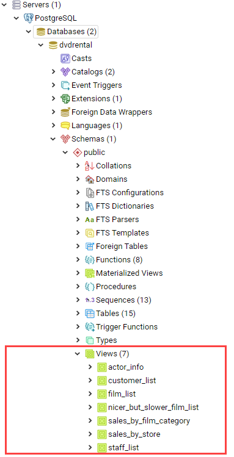
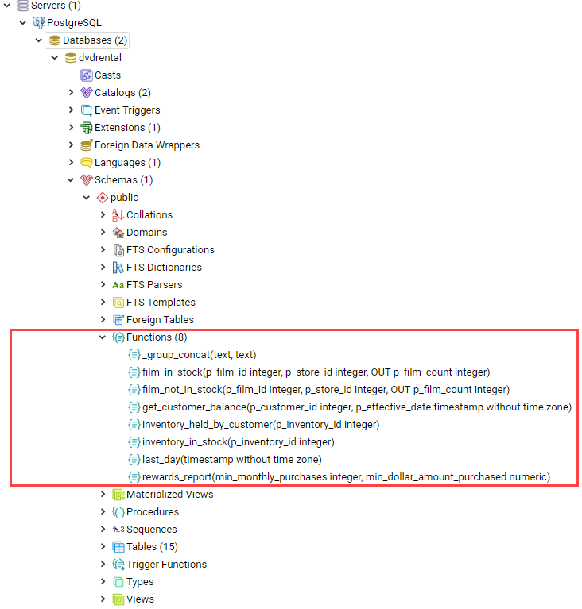

Основные понятия SQL
SQL - это язык структурированных запросов, с помощью которого можно обрабатывать и извлекать данные из реляционных баз данных.
SQL (Structured Query Language — язык структурированных запросов) - это непроцедурный язык программирования, используемый для работы с информацией реляционной базы данных, которая управляется соответствующей системой управления базами данных (СУБД).
Первоначально SQL был основным средством доступа пользователя к информации базы данных и позволял выполнять следующие операции с таблицами БД:
-
создание новой таблицы;
-
добавление записей в таблицу;
-
изменение содержимого записей;
-
удаление записей из таблицы;
-
чтение записей из одной или нескольких таблиц;
-
изменение структур таблиц.
По мере развития СУБД SQL усложнился и обогатился новыми конструкциями типа индексы, представления, триггеры, хранимые процедуры — и стал приобретать черты, свойственные языкам программирования. Изначально SQL создавался как простой стандартизированный язык извлечения и управления данными, содержащимися в реляционной СУБД. Но со временем он усложнился настолько, что превратился в инструмент разработчика, а не конечного пользователя.
Таким образом использование SQL сводится, по сути, к формированию всевозможных выборок строк и совершению операций над всеми записями, входящими в набор.
SQL состоит из четырех отдельных частей (иногда разделяют на 5 частей):
-
DDL (Data Definition Language) - язык определения данных; используется для определения структур хранящихся в БД данных. Операторы DDL позволяют создавать, изменять и удалять объекты в БД. Допустимые типы объектов зависят от используемой СУБД и обычно включают базы данных, пользователей, таблицы, представления, хранимые процедуры и ряд более вспомогательных объектов типа роли и индексы. Операторы DDL:
-
CREATE SCHEMA- создать схему БД -
DROP SHEMA- удалить схему БД; -
CREATE TABLE- создать таблицу; -
ALTER TABLE- изменить структуру таблицы; -
DROP TABLE- удалить таблицу; -
CREATE DATABASE- создать базу данных; -
DROP DATABASE- удалить базу данных; -
CREATE SEQUENCE- создать последовательность; -
DROP SEQUENCE- удалить последовательность; -
CREATE VIEW- создать представление; -
DROP VIEW- удалить представление; -
CREATE INDEX- создать индекс; -
DROP INDEX- удалить индекс; -
CREATE CONSTRAINT- создать ограничение (Primary Key, Foreign Key); -
DROP CONSTRAINT- удалить ограничение (Primary Key, Foreign Key).
-
-
DML (Data Manipulation Language) - язык манипуляции данными; используется для извлечения, вставки, изменения и удаления данных в таблицах. Операторы DML:
-
SELECT- чтение инфомации (из одной или нескольких таблиц); -
INSERT- добавить строки в таблицу; -
UPDATE- изменить строки в таблице; -
DELETE- удалить строки в таблице;
-
-
DCL (Data Control Language) - язык определения доступа к данным; используется для контроля доступа к информации БД. Операторы DCL определяют привилегии пользователя и позволяют выдавать и отбирать права на использование DDL и DML определенных операторов к определенным объектам БД. Операторы DCL:
-
GRANT- предоставление доступа пользователю или приложению на манипулирование объектами; -
DENY— явный запрет доступа для пользователя; -
REVOKE- отмена запрета или разрешения пользователя.
-
-
TCL (Transaction Control Language) - язык управления транзакциями; используется для контроля обработки транзакций в БД. Операторы TCL включают, как правило, оператор commit для сохранения изменений, сделанных в ходе транзакции, и rollback для их отмены. Оператор savepoint можно использовать для разбиения транзакции на несколько частей, и, в зависимости от определенных условий, часть из них "откатить". Операторы TCL:
-
BEGIN TRANSACTION— начать транзакцию; -
COMMIT- зафиксировать внесенные изменения; -
ROLLBACK- откатить внесенные изменения.
-
Необходимо отметить, что SQL реализует декларативную парадигму программирования: с помощью данного языка пользователь описывает запрос, а СУБД принимает решение, как этот запрос выполнить, т.е. планирует элементарные операции, необходимые для выполнения данного запроса.
Create Database and Schema
Схема/Schema с точки зрения базы данных представляет собой контейнер объектов типа таблиц, триггеров, хранимых процедур и т.п. Но стоит рассмотреть некоторые особенности для следующих СУБД:
-
PostgreSQL: Schema создается внутри объекта Database. Сервер может управлять несколькими базами данных, каждая из которых может включать несколько схем. То есть, схема не связана с учетной записью пользователя.
-
MariaDB: понятие Schema имеет тождественный смысл с Database. *База данных* (Database) является контейнером объектов, к которым пользователь получает доступ.
-
SQL Server: в Microsoft SQL Server начиная с версии 2005 жесткая связь между пользователями и схемами была отменена. Пользователи могут получить доступ на выполнение определенных операций с объектами схемы: чтение, запись, обновление или выполнение.
-
Oracle® Database: *Schema* привязывается к пользователю, т.е. наименование схемы, как правило, является учетной записью пользователя. *Схема* создается при создании пользователем первого объекта, и все последующие объекты созданные этим пользователем становятся частью этой схемы. Кроме этого Oracle позволяет создавать схему как контейнер одновременно с объектами базы данных.
Оператор CREATE DATABASE
Оператор CREATE DATABASE используется для создания новой базы данных SQL.
Синтаксис:
CREATE DATABASE databasename;Пример, следующий оператор SQL создает базу данных с именем invoice:
CREATE DATABASE invoice;Оператор DROP DATABASE
Оператор DROP DATABASE используется для удаления существующей базы данных SQL.
Синтаксис:
DROP DATABASE databasename;Пример, следующий оператор SQL уничтожает существующую базу данных info:
DROP DATABASE info;Типы данных
Тип данных — это атрибут, который определяет тип любого объекта. SQL предлагает шесть категорий типов данных для использования.
Точные типы числовых данных
| Тип данных | Возможные значения | Примечание |
|---|---|---|
|
|
Фактически является аналогом булевого типа в языках программирования. Занимает 1 байт. |
|
От |
Занимает 1 байт. Хорошо подходит для хранения небольших чисел. |
|
От |
Занимает 2 байта |
|
От |
Занимает 4 байта. Наиболее используемый тип для хранения чисел. |
|
От |
Занимают в памяти 8 байт. |
|
Хранит числа с фиксированной точностью. Занимает от 5 до 17 байт в зависимости от количества чисел после запятой. Данный тип может принимать два параметра |
|
|
Дробные значения от |
Представляет денежные величины и занимает 8 байт. |
|
Хранит дробные значения от |
Предназначено для хранения денежных величин. Занимает 4 байта. Эквивалентен типу |
|
Хранит числа от |
Занимает от 4 до 8 байт в зависимости от дробной части. |
|
От |
Занимает 4 байта. Эквивалентен типу |
Если необходимо получать из базы данных числовое значение в строго указанном формате, то для этого следует выбрать один из точных числовых типов данных.
Примерные типы числовых данных
Тип данных |
Возможные значения |
|
От |
|
От |
Некоторые числа нельзя точно представить в десятичном виде с ограниченным числом знаков, например, одну треть или число пи. Для записи таких чисел используются действительный (real) или плавающий (float) типы данных. Данные действительного типа хранятся с точностью от 1 до 7 знаков. Плавающий формат, который иногда называют еще форматом двойной точности, может хранить числа, содержащие от 8 до 15 значащих цифр. Действительный и плавающий типы данных применяются в научных приложениях для хранения чисел, не требующих точного двоичного выражения. Одна-две последние цифры могут не вполне точно сохраняться при преобразованиях в двоичный формат.
Типы данных даты и времени
Тип данных |
Примечание |
|
От |
|
От |
|
Сохраняет дату, как |
|
Сохраняет время суток, как |
Для дат применяются два типа данных, datetime и smalldatetime. Тип данных smalldatetime охватывает период времени от 1 января 1900 года до 6 июня 2079 года и включает время с точностью до минуты. Такого диапазона достаточно для подавляющего большинства проектов. Тип данных datetime годен для использования до 31 декабря 9999 года (это следует учитывать при решении проблемы 10К года).
Типы данных символьных строк
Тип данных |
Возможные значения |
|
Максимальная длина 8000 символов. (Фиксированная длина без Unicode символов) |
|
Максимум 8000 символов. (Переменная длина данных не-Unicode). |
|
Переменная длина данных, не Unicode с максимальной длиной 2147483647 символов. |
К этому типу относятся такие символьные данные, как имена или адреса. Можно выбрать символьный тип данных либо фиксированной длины, char, либо переменной длины, varchar. Фиксированный размер оказывается предпочтительным в тех случаях, когда данные имеют одинаковую или сходную длину, например, при вводе идентификатора автора (часто в этом качестве используют индивидуальный номер системы социальной безопасности). В большинстве ситуаций применение переменной длины данных не приводит к сколько-нибудь заметному увеличению времени обработки. В то же время фамилия автора может быть очень длинной, так что использование типа varchar оказывается вполне оправданным. Применительно к подавляющему большинству фамилий фиксированная длина поля означает потерю значительного объема памяти, поэтому лучше использовать тип данных varchar. При выборе того или иного типа данных всегда следует искать компромисс с учетом двух аспектов: с одной стороны, потери полезного объема памяти при использовании данных фиксированной длины, а с другой стороны, увеличения времени обработки в случае применения данных переменной длины.
Типы строк данных символов Unicode
Юникод (англ. Unicode) — стандарт кодирования символов, включающий в себя знаки почти всех письменных языков мира.
Тип данных |
Возможные значения |
|
Максимальная длина 4000 символов. (Фиксированная длина Unicode) |
|
Максимальная длина 4000 символов. (Переменная длина Unicode) |
|
Максимальная длина 231 символов (SQL Server 2005). (Переменная длина Unicode) |
|
Максимальная длина 1,073,741,823 символа. (Переменная длина Unicode) |
SQL Server 7.0 поддерживает набор символов Unicode.
В связи с этим, чтобы воспользоваться всеми преимуществами, предоставляемыми расширенными возможностями Unicode, необходимо было ввести дополнительный тип данных. Если необходимо использовать символьные данные Unicode, то следует указать тип данных Nchar или, если это информация переменной длины, то Nvarchar. При вводе данных Unicode их следует заключать в одиночные кавычки, причем непосредственно перед ними необходимо поставить заглавную латинскую букву N. Ограничение максимальной длины информации при работе с типом данных Unicode составляет 4000 знаков. Это объясняется тем, что для хранения каждого символа Unicode требуется два байта памяти. Поэтому на стандартную страницу памяти размером 8К можно поместить в два раза меньше символов Unicode, чем при использовании обычных символов.
Двоичные типы данных
Тип данных |
Возможные значения |
|
Максимальная длина 8000 байт (фиксированная длина двоичных данных) |
|
Максимальная длина 8000 байт.(Переменная длина двоичных данных) |
|
Максимальная длина 231 байт (SQL Server 2005).(Переменная длина двоичных данных) |
|
Максимальная длина 2147483647 байт.(Переменная длина двоичных данных) |
Если в базе данных необходимо хранить двоичную информацию, имеется выбор между двумя форматами представления: с фиксированной или переменной длиной. Данным фиксированной длины соответствует тип данных binary, а двоичным данным переменной длины соответствует тип данных varbinary.
Таблицы
Создание таблицы CREATE TABLE
Для того чтобы создать таблицу в SQL, используется выражение CREATE TABLE. Оно принимает в качестве параметров все колонки, которые необходимо внести, а также их типы данных. Пример создания таблицы с названием Months, в которой будет три колонки:
-
id- порядковый номер месяца (целочисленный тип илиint). -
name- название месяца. -
days- число дней в конкретном месяце.
Код создания будет выглядеть следующим образом:
CREATE TABLE months (id int, name varchar(10), days int);Запрос DROP TABLE
Оператор DROP TABLE используется для удаления существующей таблицы в базе данных.
Синтаксис:
DROP TABLE table_name;Удаление таблиц при помощи TRUNCATE
Если необходимо все данные из таблицы, но при этом оставить саму таблицу, следует использовать команду TRUNCATE:
TRUNCATE TABLE table_name;Ограничения
Ограничения могут быть указаны при создании таблицы с помощью оператора CREATE TABLE или после создания таблицы с помощью инструкции ALTER TABLE.
Синтаксис:
CREATE TABLE table_name (
column1 datatype constraint,
column2 datatype constraint,
column3 datatype constraint,
....
);SQL-ограничения используются для указания правил данных таблицы, для ограничения типа данных, которые могут входить в таблицу. Это обеспечивает точность и надежность данных в таблице. Если между ограничением и действием данных существует какое-либо нарушение, действие прерывается.
Ограничения могут быть уровнями столбцов или таблиц. Ограничения уровня столбца применяются к столбцу, а ограничения уровня таблиц относятся ко всей таблице.
В SQL обычно используются следующие ограничения:
-
NOT NULL- гарантирует, что столбец не может иметь значение NULL -
UNIQUE- обеспечивает, чтобы все значения в столбце были разными -
PRIMARY KEY- комбинация NOT NULL и UNIQUE. Уникально идентифицирует каждую строку в таблице -
FOREIGN KEY- однозначно идентифицирует строку / запись в другой таблице -
CHECK- обеспечивает, чтобы все значения в столбце удовлетворяли конкретному условию -
DEFAULT- устанавливает значение по умолчанию для столбца, если не указано значение -
INDEX- используется для быстрого создания и извлечения данных из базы данных
Ограничение NOT NULL
По умолчанию столбец может содержать значения NULL. Ограничение NOT NULL приводит к тому, что столбец НЕ принимает значения NULL. Это приводит к тому, что поле всегда содержит значение, а это означает, что нельзя вставить новую запись или обновить запись без добавления значения в это поле.
Следующий SQL-запрос гарантирует, что столбцы user_id, name и fullname НЕ будут принимать значения NULL:
CREATE TABLE users
(
user_id int NOT NULL,
name varchar(255) NOT NULL,
fullname varchar(255) NOT NULL,
balanse int
);Ограничение UNIQUE
Ограничение UNIQUE гарантирует, что все значения в столбце отличаются. Ограничения UNIQUE и PRIMARY KEY гарантируют уникальность столбца или набора столбцов. Ограничение PRIMARY KEY автоматически имеет ограничение UNIQUE.
Однако для каждой таблицы может быть множество ограничений UNIQUE, но только одно ограничение PRIMARY KEY для каждой таблицы.
CREATE TABLE users
(
user_id int NOT NULL,
name varchar(255) NOT NULL,
fullname varchar(255),
gender int,
UNIQUE (user_id)
);Создание ограничения UNIQUE когда таблица уже создана
Чтобы создать ограничение UNIQUE в столбце user_id, когда таблица уже создана, используйте следующее:
ALTER TABLE users
ADD UNIQUE (user_id);Чтобы назвать ограничение UNIQUE и определить ограничение UNIQUE для нескольких столбцов, используйте следующий синтаксис:
ALTER TABLE users
ADD CONSTRAINT UC_Users UNIQUE (user_id, name);Удаление ограничения UNIQUE
Чтобы удалить ограничение UNIQUE, используйте следующий SQL-запрос:
ALTER TABLE users
DROP INDEX UC_Users;Ограничение PRIMARY KEY
Ограничение PRIMARY KEY однозначно идентифицирует каждую запись в таблице базы данных. Первичные ключи должны содержать UNIQUE значения и не могут содержать значения NULL.
В таблице может быть только один первичный ключ, который может состоять из одного или нескольких полей.
Создание PRIMARY KEY при создании таблицы
Следующий SQL-запрос создает PRIMARY KEY в столбце user_id, когда создается таблица users:
CREATE TABLE users
(
user_id int NOT NULL,
name varchar(255) NOT NULL,
fullname varchar(255),
gender int,
PRIMARY KEY (user_id)
);Чтобы разрешить именовать ограничение PRIMARY KEY и определить ограничение PRIMARY KEY для нескольких столбцов, используйте следующий синтаксис SQL:
CREATE TABLE users
(
user_id int NOT NULL,
name varchar(255) NOT NULL,
fullname varchar(255),
gender int,
CONSTRAINT PK_Users PRIMARY KEY (user_id, name)
);Создание ограничения PRIMARY KEY когда таблица уже создана
Чтобы создать ограничение PRIMARY KEY в столбце user_id, когда таблица уже создана, используйте следующее:
ALTER TABLE users
ADD PRIMARY KEY (user_id);Чтобы разрешить именовать ограничение PRIMARY `KEY и определить ограничение PRIMARY KEY для нескольких столбцов, используйте следующий синтаксис:
ALTER TABLE users
ADD CONSTRAINT PK_Users PRIMARY KEY (user_id, name);Удаление ограничения `PRIMARY KEY
Чтобы удалить ограничение PRIMARY KEY, используйте следующее:
ALTER TABLE users
DROP PRIMARY KEY;Ограничение FOREIGN KEY
FOREIGN KEY - это ключ, используемый для соединения двух таблиц вместе. Является полем (или набором полей) в одной таблице, которое ссылается на PRIMARY KEY в другой таблице.
Таблица, содержащая внешний ключ, называется дочерней таблицей, а таблица, содержащая ключ-кандидат, называется ссылочной или родительской таблицей.
Создание FOREIGN KEY при создании таблицы
Следующий SQL-запрос создает FOREIGN KEY в столбце user_id при создании таблицы invoice:
CREATE TABLE invoice
(
invoice_id int NOT NULL,
number int NOT NULL,
user_id int,
PRIMARY KEY (invoice_id),
FOREIGN KEY (user_id) REFERENCES users(user_id)
);Чтобы разрешить именовать ограничение FOREIGN KEY и определять ограничение FOREIGN KEY для нескольких столбцов, используйте следующий синтаксис SQL:
CREATE TABLE invoice
(
invoice_id int NOT NULL,
number int NOT NULL,
user_id int,
PRIMARY KEY (invoice_id),
CONSTRAINT FK_UserInvoice FOREIGN KEY (user_id)
REFERENCES Users(user_id)
);Создание ограничения FOREIGN KEY когда таблица уже создана
Чтобы создать ограничение FOREIGN KEY в столбце user_id, когда таблица invoice уже создана, используйте следующее:
ALTER TABLE invoice
ADD FOREIGN KEY (user_id) REFERENCES Users(user_id);Чтобы разрешить именовать ограничение FOREIGN KEY и определять ограничение FOREIGN KEY для нескольких столбцов, используйте следующий синтаксис:
ALTER TABLE invoice
ADD CONSTRAINT FK_UsersInvoice
FOREIGN KEY (user_id) REFERENCES Users(user_id);Удаление ограничения FOREIGN KEY
Чтобы удалить ограничение FOREIGN KEY, используйте следующий:
ALTER TABLE invoice
DROP FOREIGN KEY FK_UsersInvoice;Ограничение CHECK
Ограничение CHECK используется для ограничения диапазона значений, который может быть помещен в столбец.
-
Если определяется ограничение
CHECKдля одного столбца, оно допускает только определенные значения для этого столбца. -
Если определяется ограничение
CHECKдля таблицы, оно может ограничить значения в определенных столбцах на основе значений в других столбцах в строке.
Создание ограничения CHECK при создании таблицы
Следующий SQL-запрос создает ограничение CHECK в столбце age, когда создается таблица users. Ограничение CHECK гарантирует, не может быть пользователя с возрастом старше 60 лет:
CREATE TABLE users
(
user_id int NOT NULL,
name varchar(255) NOT NULL,
fullname varchar(255),
age int,
CHECK (age>=60)
);Чтобы разрешить именовать ограничение CHECK и определить ограничение CHECK для нескольких столбцов, используйте следующий синтаксис SQL:
CREATE TABLE users
(
user_id int NOT NULL,
name varchar(255) NOT NULL,
fullname varchar(255),
age int,
balance int,
CONSTRAINT CHK_Users CHECK (age>=60 AND balance = 500)
);Создание ограничения CHECK когда таблица уже создана
Чтобы создать ограничение CHECK в столбце age, когда таблица уже создана, используйте следующее:
ALTER TABLE users
ADD CHECK (age>=60);Чтобы разрешить именовать ограничение CHECK и определить ограничение CHECK для нескольких столбцов, используйте следующий синтаксис:
ALTER TABLE users
ADD CONSTRAINT CHK_UsersAge CHECK (age>=60 AND country='Spain');DROP CHECK
Чтобы удалить ограничение CHECK, используйте следующий SQL:
ALTER TABLE users
DROP CHECK CHK_UsersAge;Ограничение DEFAULT
Ограничение DEFAULT используется для предоставления значения по умолчанию для столбца. Значение по умолчанию будет добавлено ко всем новым записям, если другое значение не указано.
Установка DEFAULT столбца при создании таблицы
Следующий SQL-запрос устанавливает значение DEFAULT для столбца country, когда создается таблица users:
CREATE TABLE users
(
user_id int NOT NULL,
name varchar(255) NOT NULL,
fullname varchar(255),
gender int,
country varchar(255) DEFAULT 'Spain'
);Установка DEFAULT столбца в уже созданной таблице
Чтобы создать ограничение DEFAULT в столбце country, когда таблица уже создана, используйте следующее:
ALTER TABLE users
ALTER country SET DEFAULT 'Spain';Удаление ограничения DEFAULT
Чтобы удалить ограничение DEFAULT, используйте следующее:
ALTER TABLE users
ALTER country DROP DEFAULT;Изменение структуры таблицы
Оператор ALTER TABLE используется для добавления, удаления или изменения столбцов в существующей таблице, а также для добавления и удаления различных ограничений для существующей таблицы.
ALTER TABLE - ADD Column
Чтобы добавить столбец в таблицу, используйте следующий синтаксис:
ALTER TABLE table_name
ADD column_name datatype;ALTER TABLE - DROP COLUMN
Чтобы удалить столбец в таблице, используйте следующий синтаксис, обратите внимание, что некоторые системы баз данных не позволяют удалить столбец:
ALTER TABLE table_name
DROP COLUMN column_name;ALTER TABLE - ALTER/MODIFY COLUMN
Чтобы изменить тип данных столбца в таблице, используйте следующий синтаксис:
ALTER TABLE table_name
ALTER COLUMN column_name datatype;ALTER TABLE table_name
MODIFY COLUMN column_name datatype;Изменить тип данных
Изменим тип данных столбца с именем day_birth в таблице users.
ALTER TABLE users
ALTER COLUMN day_birth year;Пример DROP COLUMN
Для удаления столбца day_birth в таблице users используется следующее:
ALTER TABLE users
DROP COLUMN day_birth;Однострочные и многострочные комментарии
Комментарии используются для пояснения разделов операторов SQL или для предотвращения выполнения операторов во время отладки запросов.
Однострочные комментарии
Однострочные комментарии начинаются со знака -. Любой текст между - и концом строки будет проигнорирован (не будет выполнен).
В следующем примере в качестве объяснения используется однострочный комментарий:
-- Select all:
SELECT * FROM users;В следующем примере используется однострочный комментарий для игнорирования конца строки:
SELECT * FROM users -- WHERE balance = 1000;В следующем примере используется однострочный комментарий для игнорирования оператора:
-- SELECT * FROM users
SELECT * FROM users;Многострочные комментарии
Многострочные комментарии начинаются с / и заканчиваются на /. Любой текст между / и / будет проигнорирован. В следующем примере в качестве объяснения используется многострочный комментарий:
/* Этот запрос
выведет данные
всех пользователей */
SELECT * FROM users;В следующем примере используется многострочный комментарий для игнорирования многих операторов:
/*SELECT * FROM users;
SELECT * FROM product;
SELECT * FROM invoice;*/
SELECT * FROM category;Манипуляция данными
Добавление записи в таблицу (INSERT INTO)
INSERT INTO - этот запрос используется для добавления двумя разными способами новых строк данных в таблицу в базе данных.
Способ первый:
INSERT INTO months
VALUES (1, 'January', 31);Этот способ не подразумевает указания названий колонок, а лишь принимает значения в том порядке, в котором они указаны в таблице. Однако, если в будущем необходимо добавить дополнительные колонки, все предыдущие запросы работать не будут.
Для решения данной проблемы следует использовать второй способ. Его суть заключается в том, что перед вводом данных указываются названия колонок.
INSERT INTO months (id, name, days)
VALUES (2, 'February', 29);Выборка записей из таблицы (SELECT)
Простая выборка (SELECT)
SELECT - используется для выбора данных из базы данных. Возвращаемые данные сохраняются в таблице результатов, называемой результирующим набором.
SELECT *
FROM characters;Результатом данного запроса будет таблица со всеми данными в таблице characters. Знак звёздочки (*) означает то, что необходимо показать все столбцы из таблицы без исключений. Так как в базе данных обычно больше одной таблицы, нам необходимо указывать название таблицы, данные из которой требуется посмотреть. Сделать это можно используя ключевое слово FROM.
Когда необходимы лишь некоторые столбцы из таблицы, то можно указать их имена через запятую вместо звёздочки.
SELECT name, weapon
FROM characters;Выборка уникальных (SELECT DISTINCT)
Оператор SELECT DISTINCT используется для возврата только отдельных (разных) значений. Внутри таблицы столбец часто содержит много повторяющихся значений и вам нужно только перечислить отличающиеся значения.
SELECT DISTINCT column1, column2, ...
FROM table_name;Пример, следующий оператор SQL выбирает только значения DISTINCT из столбца name в таблице users:
SELECT DISTINCT name
FROM users;Пример, следующий оператор SQL выбирает только значения DISTINCT по столбцам name, age в таблице users, т.е. уникальное сочетание name + age:
SELECT DISTINCT name, age
FROM users;В следующем SQL-заявлении указано количество разных имен пользователей:
SELECT COUNT(DISTINCT name)
FROM users;Выборка с условием (WHERE)
WHERE - это запрос позволяющий включить в вывод лишь некоторые конкретные строки. Данное ключевое слово позволяет фильтровать данные по определённому условию.
SELECT column1, column2, ...
FROM table_name
WHERE condition;Пример предложения, следующий оператор SQL выбирает всех пользователей с именем name в таблице users:
SELECT *
FROM users
WHERE name = 'Tom';|
Note
|
Следует отметить, что SQL требует одинарных кавычек вокруг текстовых значений (большинство систем баз данных также допускают двойные кавычки). Однако числовые поля не должны быть заключены в кавычки. |
Операторы в разделе WHERE
Следующие операторы могут использоваться в предложении WHERE:
| Заголовок | Группа |
|---|---|
|
Равно |
|
Не равно |
|
Больше чем |
|
Меньше чем |
|
Больше или равно |
|
Меньше или равно |
|
Между включенным диапазоном |
|
Поиск по шаблону |
|
Поиск данных по нескольким значениям, перечисленным через запятую |
Операторы AND, OR и NOT
Предложение WHERE может быть объединено с операторами AND, OR и NOT. Операторы AND и OR используются для фильтрации записей на основе более чем одного условия:
-
Оператор
ANDотображает запись, если все условия, разделенные символомAND, имеют значениеtrue. -
Оператор
ORотображает запись, если любое из условий, разделенныхOR, являетсяtrue. -
Оператор
NOTотображает запись, если условие (и) false.
Оператор AND
SELECT column1, column2, ...
FROM table_name
WHERE condition1 AND condition2 AND condition3 ...;Следующий оператор SQL выбирает все поля из users, где пол gender равен F (Female), а баланс balance больше или равен 1000.
SELECT *
FROM users
WHERE gender = 'F'
AND balance >= 1000;Оператор OR
SELECT column1, column2, ...
FROM table_name
WHERE condition1 OR condition2 OR condition3 ...;Следующий оператор SQL выбирает все поля из users, где баланс пользователя balance равен 1000 или возраст пользователя age равен 25.
SELECT * FROM users
WHERE balance = 1000 OR age = 25;Оператор NOT
SELECT column1, column2, ...
FROM table_name
WHERE NOT condition;Следующий оператор SQL выбирает все поля из users, где возраст age не равен 30:
SELECT *
FROM users
WHERE NOT age = 30;Комбинирование AND, OR и NOT
Также можно комбинировать операторы AND, OR и NOT.
Следующий оператор выбирает все поля из users, где возраст age равно 30. И баланс balance больше 1000 или имя name не равно Tom.
SELECT *
FROM users
WHERE age = 30
AND (balance > 1000 OR NOT name = 'Tom');Выборка с сортировкой результата (ORDER BY)
Ключевое слово ORDER BY используется для сортировки результирующего набора в порядке возрастания или убывания. По умолчанию оно сортирует записи по возрастанию. Чтобы отсортировать записи в порядке убывания, используйте ключевое слово DESC. Для сортировки по возрастанию, используйте ключевое слово ASC.
SELECT column1, column2, ...
FROM table_name
ORDER BY column1, column2, ... ASC|DESC;Следующий оператор выбирает всех пользователей из таблицы users, отсортированные по столбцу name:
SELECT *
FROM users
ORDER BY name;или
SELECT *
FROM users
ORDER BY name ASC;Но ASC избыточен, так как он идет по умолчанию.
Следующий оператор выбирает всех пользователей из таблицы users, отсортированные по столбцу name в обратном порядке:
SELECT *
FROM users
ORDER BY name DESC;Значение NULL
Поле со значением NULL является полем без значения. Если поле в таблице является необязательным, можно вставить новую запись или обновить запись без добавления значения в это поле. Затем поле будет сохранено со значением NULL. Значение NULL отличается от нулевого значения или поля, содержащего пробелы.
Как проверить значения NULL?
Невозможно проверить значения NULL с операторами сравнения, такими как =, < или !=. Вместо этого нужно использовать операторы IS NULL и IS NOT NULL.
IS NULLSELECT column_names
FROM table_name
WHERE column_name IS NULL;Следующий оператор использует оператор IS NULL для перечисления всех пользователей, у которых нет телефона.
SELECT name, phone
FROM users
WHERE phone IS NULL;NOT NULLSELECT column_names
FROM table_name
WHERE column_name IS NOT NULL;Следующий оператор использует оператор IS NOT NULL для перечисления всех пользователей, у которых есть телефон.
SELECT name, phone
FROM users
WHERE phone IS NOT NULL;Выборка с указанием количества записей в результате (LIMIT)
Предложение SELECT … LIMIT используется для указания количества возвращаемых записей. Оно полезно для больших таблиц с тысячами записей. Возвращение большого количества записей может повлиять на производительность.
SELECT column_name(s)
FROM table_name
WHERE condition
LIMIT number;Примеры TOP, LIMIT и ROWNUM
Следующий оператор показывает эквивалентный пример, используя предложение LIMIT:
SELECT *
FROM users
LIMIT 3;Следующий оператор показывает эквивалентный пример, используя предложение LIMIT:
SELECT *
FROM users
WHERE balance = 1000
LIMIT 5;|
Warning
|
TOP, ROWNUM - не входят в стандарт SQL, это dialect для СУБД Oracle. Поэтому они не будут работать например для PostgreSQL, MariaDB.
|
Следующий оператор выбирает первые три записи из таблицы users:
SELECT TOP 3 *
FROM users;Следующий оператор показывает эквивалентный пример с использованием ROWNUM:
SELECT *
FROM users
WHERE ROWNUM <= 3;Следующий оператор выбирает первые 25% записей из таблицы users:
SELECT TOP 25 PERCENT *
FROM users;Следующий оператор выбирает первые 5 записи из таблицы users, где баланс balance равен 1000:
SELECT TOP 5 *
FROM users
WHERE balance = 1000;Следующий оператор показывает эквивалентный пример с использованием ROWNUM:
SELECT * FROM users
WHERE balance = 1000 AND ROWNUM <= 5;Выборка по заданному шаблону (LIKE)
Оператор LIKE используется в предложении WHERE для поиска заданного шаблона в столбце.
В сочетании с оператором LIKE используются два подстановочных знака:
-
%- знак процента представляет нулевой, один или несколько символов -
_- подчеркнутый символ представляет собой один символ
SELECT column1, column2, ...
FROM table_name
WHERE columnN LIKE pattern;| Выражение | Описание |
|---|---|
|
Находит любые значения, начинающиеся с |
|
Находит любые значения, заканчивающиеся на |
|
Находит любые значения, которые имеют |
|
Находит любые значения, которые имеют |
|
Находит любые значения, начинающиеся с |
|
Находит любые значения, начинающиеся с |
Подстановочные знаки
Символ подстановки используется для замены любого другого символа в строке. Подстановочные символы используются с оператором LIKE. Оператор LIKE используется в предложении WHERE для поиска заданного шаблона в столбце.
Использование подстановочного знака
Следующий оператор SQL выбирает всех пользователей с name, начиная с любого символа, за которым следует о:
SELECT *
FROM users
WHERE name LIKE '_o';Следующий оператор выбирает всех пользователей с name начиная с B, за которыми, следует любой символ. А за ним следует l, за которым следует любой символ, а затем y:
SELECT *
FROM users
WHERE name LIKE 'B_l_y';|
Warning
|
Подстановочные знаки [charlist] и [!charlist] - не входят в стандарт SQL, это dialect для СУБД Oracle. Поэтому они не будут работать например для PostgreSQL, MariaDB.
|
Использование подстановочного знака [charlist]
Следующий оператор SQL выбирает всех пользователей с name, начиная с Т, Р или Е:
SELECT *
FROM users
WHERE name LIKE '[ТРЕ]%';Следующий оператор SQL выбирает всех пользователей с name, начиная с Т, Р или Е:
SELECT *
FROM users
WHERE name LIKE '[Т-E]%';Использование подстановочного знака [!charlist]
Два следующих оператора SQL выбирают всех пользователей с помощью name NOT, начинающегося с Т, Р или E:
SELECT *
FROM users
WHERE name LIKE '[!ТРЕ]%';Или:
SELECT *
FROM users
WHERE name NOT LIKE '[ТРЕ]%';Выборка с проверкой на вхождение в множество (IN)
Оператор IN позволяет указать несколько значений в предложении WHERE. Он является сокращением для нескольких условий OR.
SELECT column_name(s)
FROM table_name
WHERE column_name IN (value1, value2, ...);SELECT column_name(s)
FROM table_name
WHERE column_name IN (SELECT STATEMENT);Следующий SQL запрос выбирает всех пользователей, которые находятся в странах Belarus, Spain и France:
SELECT *
FROM users
WHERE country IN ('Belarus', 'Spain', 'France');Следующий SQL запрос выбирает всех пользователей, которые НЕ расположены в Belarus, Spain и France:
SELECT *
FROM users
WHERE country NOT IN ('Belarus', 'Spain', 'France');Выборка с проверкой на вхождение в диапазон (BETWEEN и NOT BETWEEN)
Оператор BETWEEN выбирает значения в заданном диапазоне. Значения могут быть числами, текстом или датами.
SELECT column_name(s)
FROM table_name
WHERE column_name BETWEEN value1 AND value2;Следующий SQL запрос выбирает все продукты с ценой BETWEEN 5 и 200.
SELECT *
FROM products
WHERE price BETWEEN 5 AND 200;Чтобы отобразить товары вне диапазона предыдущего примера, используйте NOT BETWEEN:
SELECT *
FROM products
WHERE price NOT BETWEEN 5 AND 200;Пример BETWEEN с IN
Следующий оператор выбирает все товары с ценой BETWEEN 5 и 200 и не показывать товары с категориями 1, 2.
SELECT *
FROM products
WHERE (price BETWEEN 5 AND 200)
AND NOT category_id IN (1, 2);BETWEEN текстовых значений
Следующий оператор выбирает все товары с name BETWEEN Bike и PC:
SELECT *
FROM products
WHERE name BETWEEN 'Bike' AND 'PC'
ORDER BY name;NOT BETWEEN текстовых значений
Следующий оператор выбирает все продукты с name NOT BETWEEN Bike и PC:
SELECT *
FROM products
WHERE name NOT BETWEEN 'Bike' AND 'PC'
ORDER BY name;Пример BETWEEN с датами
Следующий оператор SQL выбирает все счета с помощью date BETWEEN.
SELECT *
FROM products
WHERE manufacture_date BETWEEN '2021-02-01' AND '2021-04-01';Псевдонимы (Aliases)
SQL-псевдонимы используются для предоставления таблицы или столбца таблицы временного имени. Псевдонимы часто используются, чтобы сделать имена столбцов более читабельными. Псевдоним существует только для продолжительности запроса.
Псевдонимы могут быть полезны, когда:
-
В запросе содержится более одной таблицы
-
Функции используются в запросе
-
Названия столбцов большие или не очень читаемые
-
Два или более столбца объединяются вместе
SELECT column_name AS alias_name
FROM table_name;SELECT column_name(s)
FROM table_name AS alias_name;Следующий оператор создает два псевдонима: один для столбца user_id и один для столбца name:
Пример:
SELECT user_id AS id, name AS user
FROM users;Следующий оператор создает два псевдонима: один для столбца name и один для столбца country:
SELECT name AS user, country AS "User from Country"
FROM users;Следующий оператор выбирает все покупки от пользователя с помощью user_id и name. В запросе используются таблицы users и products, которым даются псевдонимы таблиц u и p:
SELECT u.name AS buyer, p.name as purchase, p.price
FROM users AS u,
products AS p
WHERE u.name = 'Lily'
AND u.user_id = p.user_id;Обновление записей (UPDATE)
Зачастую необходимо изменить данные в таблице. В SQL это делается с помощью UPDATE.
Использование UPDATE включает в себя выбор таблицы, в которой находится поле подлежащее изменению. Запись нового значения осуществляется с помощью запроса WHERE, чтобы обозначить конкретное место в таблице.
UPDATE table_name
SET column1 = value1, column2 = value2, ...
WHERE conditionПредположим есть таблица с самыми высоко оценёнными сериалами всех времён. Однако в ней есть несоответствие: Игра Престолов обозначена как комедия, изменим значение поля следующим запросом:
UPDATE tv_series
SET genre = 'drama'
WHERE name = 'Game of Thrones';Удаление записей из таблицы (DELETE)
Удаление записи из таблицы очень простая операция, всё что нужно - это обозначить, что необходимо удалить.
DELETE
FROM tv_serials
WHERE tv_serial_id = 3;|
Note
|
Необходимо убедиться что используется запрос WHERE, когда происходит удаление записи из таблицы. Иначе удалятся все записи.
|
Удалить все записи
Можно удалить все строки таблицы без удаления таблицы. Это означает, что структура таблицы, атрибуты и индексы будут неповрежденными:
DELETE FROM table_name;или:
DELETE
FROM tv_serials
WHERE tv_serial_id IS NOT NULL;Многотабличные базы данных
Ключи
Ключ — это колонка или колонки, не имеющие в строках дублирующих значений.
Ключи бывают:
-
Первичные
-
Внешние
-
Составные
Первичный ключ
Столбец, который в базе данных должен быть уникальным помечают первичным ключом. Первичный ключ или primary key означает, что в таблице значение колонки primary key не может повторяться. Таким образом данный ключ позволяет однозначно идентифицировать запись в таблице не боясь при этом, что значение столбца повториться.
В качестве первичного ключа может использоваться:
-
Естественный Ключ (Natural key) – набор атрибутов описываемой записью сущности, уникально её идентифицирующий (например, номер паспорта для человека).
-
Суррогатный Ключ (Surrogate Key) – автоматически сгенерированное поле, никак не связанное с информационным содержанием записи.
Допустим есть таблица студентов с полями: ФИО, год рождения. Поскольку может возникнуть ситуация когда ФИО и год рождения совпадут сразу у нескольких студентов, верным решением будет внести в таблицу первичный ключ:
Первичный ключ |
ФИО |
Год рождения |
1 |
Иванов Иван |
2001 |
2 |
Егоров Егор |
2002 |
3 |
Николаенко Николай |
2001 |
Внешний ключ
Внешние ключи еще называют ссылочным, они необходимы для связывания таблиц между собой.
Артикул |
ID тип товара |
Цена |
151687 |
1 |
104 |
151605 |
1 |
42 |
151690 |
2 |
77 |
151601 |
2 |
90 |
ID |
Тип товара |
1 |
Джемпер |
2 |
Футболка |
В таблице Тип товара внешним ключом будет поле ID тип товара в таблице Товары. Благодаря такой зависимости образуется связь между двумя таблицами.
Составной ключ
Бывают ситуации, когда при вставке в таблицу нужно проверять запись на уникальность сразу по нескольким полям.
Составной ключ — это несколько первичных ключей в таблице. Таким образом, создав составной ключ, уникальность записи будет проверяться по полям, которые объединенные в этот ключ.
Город |
№ школы |
Директор |
Адрес |
Телефон |
Гомель |
1 |
Иванов Иван |
Лесная, 2 |
2-22-99 |
Минск |
1 |
Егоров Егор |
Солнечная, 4 |
4-44-44 |
Минск |
2 |
Николаенко Николай |
Радужная, 1 |
5-55-55 |
Составной ключ может состоять и более чем из двух полей. В таблице поля Город и № школы вместе образуют составной ключ. В такой таблице у разных записей не могут совпасть одновременно два поля Город и № школы, а номера школ совпасть могут.
Подзапросы
Оператор EXISTS
Оператор EXISTS используется для проверки существования любой записи в подзапросе. Если подзапрос возвращает одну или несколько записей, то возвращается true.
Синтаксис EXISTS
SELECT column_name(s)
FROM table_name
WHERE EXISTS
(SELECT column_name FROM table_name WHERE condition);Примеры использования EXISTS
Следующий оператор возвращает TRUE и перечисляет доставки с ценой товара менее 1000:
SELECT name
FROM delivery
WHERE EXISTS (SELECT name FROM product WHERE delivery_id = delivery.delivery_id AND price < 1000);Следующий оператор SQL возвращает TRUE и перечисляет доставки с ценой товара 5000.
SELECT name
FROM delivery
WHERE EXISTS (SELECT name FROM product WHERE delivery_id = delivery.delivery_id AND price = 5000);Операторы ANY и ALL
Операторы ANY и ALL используются с предложением WHERE или HAVING. Оператор ANY возвращает true, если какое-либо из значений подзапроса соответствует условию. Оператор ALL возвращает true, если все значения подзапроса удовлетворяют условию.
Синтаксис ANY
SELECT column_name(s)
FROM table_name
WHERE column_name operator ANY
(SELECT column_name FROM table_name WHERE condition);Пример ANY
Оператор ANY возвращает TRUE, если какое-либо из значений подзапроса соответствует условию. Следующий оператор возвращает TRUE и перечисляет имена товаров, если он находит ЛЮБЫЕ записи в таблице info, с количеством = 15:
SELECT name
FROM product
WHERE product_id = ANY (SELECT product_id FROM info WHERE counts = 15)Следующий оператор возвращает TRUE и перечисляет имена товаров, если он находит ЛЮБЫЕ записи в таблице info, с количеством > 15:
SELECT name
FROM product
WHERE product_id = ANY (SELECT product_id FROM info WHERE counts > 15);Синтаксис ALL
SELECT column_name(s)
FROM table_name
WHERE column_name operator ALL
(SELECT column_name FROM table_name WHERE condition);Пример ALL
Оператор ALL возвращает TRUE, если все значения подзапроса удовлетворяют условию.
Следующий оператор возвращает TRUE и перечисляет имена товаров, если ВСЕ записи в таблице info имеют количество = 7:
SELECT name
FROM product
WHERE product_id = ALL (SELECT product_id FROM info WHERE couns =7);Соединение
Оператор UNION используется для объединения результирующего набора из двух или более операторов SELECT. Каждый оператор SELECT в UNION должен иметь одинаковое количество столбцов. Столбцы также должны иметь похожие типы данных и в каждой инструкции SELECT быть в том же порядке.
Синтаксис UNION
SELECT column_name(s) FROM table1
UNION
SELECT column_name(s) FROM table2;Пример UNION
Следующий оператор выбирает все разные города (только отдельные значения) от users и delivery:
SELECT city FROM users
UNION
SELECT city FROM delivery
ORDER BY city;Синтаксис UNION ALL
Оператор UNION по умолчанию выбирает только разные значения. Чтобы разрешить повторяющиеся значения, используйте UNION ALL:
SELECT column_name(s) FROM table1
UNION ALL
SELECT column_name(s) FROM table2;Пример UNION ALL
Следующий оператор выбирает все города (дублирующиеся значения также) из users и delivery:
SELECT city FROM users
UNION ALL
SELECT city FROM delivery
ORDER BY city;Оператор UNION с WHERE
Следующий оператор выбирает все разные испанские города (только отдельные значения) от users и delivery:
SELECT city, country FROM users
WHERE country='Spain'
UNION
SELECT city, country FROM delivery
WHERE country='Spain'
ORDER BY city;Оператор UNION ALL с WHERE
Следующий оператор выбирает все испанские города (повторяющиеся значения) также из users и delivery:
SELECT city, country FROM users
WHERE country='Spain'
UNION ALL
SELECT city, country FROM delivery
WHERE country = 'Spain'
ORDER BY city;Объединения
Предложение JOIN используется для объединения строк из двух или более таблиц на основе соответствующего столбца между ними.
Существует несколько типов JOIN в SQL:
-
(INNER) JOIN- возвращает записи, имеющие соответствующие значения в обеих таблицах -
LEFT (OUTER) JOIN- возвращает все записи из левой таблицы и соответствующие записи из правой таблицы -
RIGHT (OUTER) JOIN- вернуть все записи из правой таблицы и сопоставленные записи из левой таблицы -
FULL (OUTER) JOIN- возвращает все записи, когда есть совпадение в левой или правой таблице
INNER JOIN
Ключевое слово INNER JOIN выбирает записи, имеющие соответствующие значения в обеих таблицах
Синтаксиc:
SELECT column_name(s)
FROM table1
INNER JOIN table2 ON table1.column_name = table2.column_name;Пример:
| user_id | name | fullname |
|---|---|---|
1 |
Ник |
Никольский |
2 |
Майк |
Майкович |
| invoice_id | user_id | product_id |
|---|---|---|
1 |
1 |
7 |
2 |
2 |
12 |
Столбец user_id в таблице invoice ссылается на user_id в таблице invoice между которыми осуществляется взаимосвязь. Для выбора записей, имеющие соответствующие значения в обеих таблицах используется следующий запрос:
SELECT invoice.invoice_id, users.name
FROM Orders
INNER JOIN users ON invoice.user_id = users.user_id;JOIN Three таблиц
Следующий оператор выбирает все счета с информацией о пользователях и отправителях:
Пример:
SELECT invoice.invoice, users.name, addresser.name
FROM ((invoice
INNER JOIN users ON invoice.user_id = users.user_id)
INNER JOIN addresser ON invoice.addresser_id = addresser.addresser_id);LEFT JOIN
Ключевое слово LEFT JOIN возвращает все записи из левой таблицы и сопоставленные записи из правой таблицы. Результат равен NULL с правой стороны, если нет совпадения.
Синтаксис:
SELECT column_name(s)
FROM table1
LEFT JOIN table2 ON table1.column_name = table2.column_name;Пример, следующий оператор выберет всех пользователей и любые заказы, которые они могут иметь:
SELECT users.name, invoice.invoice_id
FROM users
LEFT JOIN invoice ON users.user_id = invoice.user_id
ORDER BY users.name;RIGHT JOIN
Ключевое слово RIGHT JOIN возвращает все записи из правой таблицы и сопоставленные записи из левой таблицы. Результат равен NULL с левой стороны, когда нет совпадения.
Синтаксис:
SELECT column_name(s)
FROM table1
RIGHT JOIN table2 ON table1.column_name = table2.column_name;Пример, следующий оператор вернет всех пользователей и любые заказы, которые они могли бы разместить.
SELECT invoice.invoice_id, users.name, users.fullname
FROM invoice
RIGHT JOIN users ON invoice.user_id = users.user_id
ORDER BY invoice.invoice_id;FULL OUTER JOIN
Ключевое слово FULL OUTER JOIN возвращает все записи, когда есть совпадение в обеих таблицах таблицы или справа.
Синтаксис:
SELECT column_name(s)
FROM table1
FULL OUTER JOIN table2 ON table1.column_name = table2.column_name;Пример, следующий оператор выбирает всех пользователей и все заказы:
SELECT users.name, invoice.invoice_id
FROM users
FULL OUTER JOIN invoice ON users.user_id = invoice.user_id
ORDER BY users.name;Регулярное соединение Self JOIN
Self JOIN - это регулярное соединение, но таблица соединяется сама с собой.
Синтаксис:
SELECT column_name(s)
FROM table1 T1, table1 T2
WHERE condition;Пример, следующий оператор соответствует пользователям из одного города:
SELECT A.name AS name1, B.name AS name2, A.city
FROM users A, users B
WHERE A.user_id <> B.user_id
AND A.city = B.city
ORDER BY A.city;Агрегатные функции и группировка
Агрегатные функции
Функции MIN() и MAX()
Функция MIN() возвращает наименьшее значение выбранного столбца. Функция MAX() возвращает наибольшее значение выбранного столбца.
Синтаксис MIN():
SELECT MIN(column_name)
FROM table_name
WHERE condition;Пример MIN():
SELECT MIN(price) AS min_price
FROM product;Синтаксис MAX():
SELECT MAX(column_name)
FROM table_name
WHERE condition;Пример MAX()
SELECT MAX(price) AS max_price
FROM product;Функция COUNT()
Функция COUNT() возвращает количество строк, соответствующих заданным критериям.
Синтаксис:
SELECT COUNT(column_name)
FROM table_name
WHERE condition;Пример:
Следующий оператор SQL находит количество товаров.
SELECT COUNT(product_id)
FROM product;Функция AVG()
Функция AVG() возвращает среднее значение числового столбца.
Синтаксис:
SELECT AVG(column_name)
FROM table_name
WHERE condition;Например найдем среднюю стоимость товара:
SELECT AVG(price)
FROM product;Функция SUM()
Функция SUM() возвращает общую сумму числового столбца.
Синтаксис:
SELECT SUM(column_name)
FROM table_name
WHERE condition;Пример, найдем сумму полей доставка delivery в таблице invoice:
SELECT SUM(delivery)
FROM invoice;Группировка
Оператор GROUP BY часто используется с агрегатными функциями (COUNT, MAX, MIN, SUM, AVG) для группировки результирующего набора одним или несколькими столбцами.
Синтаксис GROUP BY
SELECT column_name(s)
FROM table_name
WHERE condition
GROUP BY column_name(s)
ORDER BY column_name(s);Пример SQL GROUP BY
В следующем выражении указано количество пользователей в каждой стране:
SELECT COUNT(use_id), country
FROM users
GROUP BY country;В следующем SQL-заявлении указано количество пользователей в каждой стране, отсортированных по высоким и низким:
SELECT COUNT(user_id), country
FROM users
GROUP BY country
ORDER BY COUNT(user_id) DESC;Оператор`GROUP BY` с JOIN
В следующем выражении указано количество заказов, отправленных каждой службой доставки:
SELECT delivery.name, COUNT(invoice.delivery_id) AS orders FROM invoice
LEFT JOIN delivery ON invoice.delivery_id = delivery.delivery_id
GROUP BY name;Предложение HAVING
Предложение HAVING используется в SQL, для работы с агрегатными функциями, так как WHERE не могло с ними использоваться.
Синтаксис:`
SELECT column_name(s)
FROM table_name
WHERE condition
GROUP BY column_name(s)
HAVING condition
ORDER BY column_name(s);Пример, в следующем SQL-заявлении указано количество пользователей в каждой стране. Включать только страны с более чем 7 клиентами:
SELECT COUNT(user_id), country
FROM users
GROUP BY country
HAVING COUNT(user_id) > 7;В следующем SQL-заявлении указано количество пользователей в каждой стране, отсортированные по высоким и низким.
SELECT COUNT(user_id), country
FROM users
GROUP BY country
HAVING COUNT(user_id) > 7
ORDER BY COUNT(user_id) DESC;Проектирование баз данных
Нормализация и денормализация баз данных
Нормализация базы данных - это процесс эффективной организации данных в базе данных. Есть две причины процесса нормализации:
-
Устранение избыточных данных, например, хранение тех же данных в более чем одной таблице.
-
Обеспечение зависимостей данных.
Денормализация — намеренное приведение структуры базы данных в состояние, не соответствующее критериям нормализации, обычно проводимое с целью ускорения операций чтения из базы за счет добавления избыточных данных.
Нормализация состоит из ряда принципов, которые помогают в создании хорошей структуры базы данных. Эти принципы делятся на нормальные формы, их цель в организации структуры базы данных таким образом, чтобы правильно организовать структуру базы данных.
Первая нормальная форма
Правила первой нормальной формы:
-
В таблице не должно быть дублирующих строк.
-
В каждой ячейке таблицы хранится атомарное значение (одно не составное значение).
-
В столбце хранятся данные одного типа.
-
Нет упорядочивания строк сверху вниз (другими словами, порядок строк не несет в себе никакой информации).
-
Нет упорядочивания столбцов слева направо (другими словами, порядок столбцов не несет в себе никакой информации).
Пример, допустим есть ненормализованная таблица:
ID покупателя |
ФИО |
Заказ |
Телефон |
10 |
Егоров Егор |
Ноутбук Asus G53 |
Мобильный телефон 44 888 77 77, Домашний Телефон 8-77-77 |
10 |
Егоров Егор |
Телефон Nokia 5310 |
Мобильный телефон 44 888 77 77, Домашний Телефон 8-77-77 |
10 |
Егоров Егор |
Наушники LG 700 |
Мобильный телефон 44 888 77 77, Домашний Телефон 8-77-77 |
Такая таблица нарушает требования первой нормальной формы. Ее следует разбить на две части, а затем соединить их с помощью ключа.
ID покупателя |
ФИО |
Мобильный телефон |
Домашний телефон |
10 |
Егоров Егор |
44 888 77 77 |
8-77-77 |
ID заказа |
ID клиента |
Заказ |
1 |
10 |
Ноутбук Asus G53 |
2 |
10 |
Телефон Nokia 5310 |
3 |
10 |
Наушники LG 700 |
Такие таблицы соответствуют требованиям первой нормальной формы.
Вторая нормальная форма
Правило второй нормальной формы звучит следующим образом: отношение соответствует второй нормальной форме, если оно соответствует первой нормальной форме и каждый не ключевой атрибут неприводимо зависит от первичного ключа.
ФИО |
Должность |
Подразделение |
Егоров Егор |
Программист |
Отдел разработки ПО |
Иванов Иван |
Бухгалтер |
Бухгалтерия |
Борисов Борис |
Продавец |
Отдел реализации |
Допустим в организации каждому сотруднику присваивается уникальный табельный номер, который никогда не будет изменен. Таким образом, чтобы привести эту таблицу ко второй нормальной форме, необходимо добавить в нее еще один атрибут, т.е. столбец с табельным номером, который будет выступать первичным ключом.
Табельный номер |
ФИО |
Должность |
Подразделение |
660 |
Егоров Егор |
Программист |
Отдел разработки ПО |
212 |
Иванов Иван |
Бухгалтер |
Бухгалтерия |
1024 |
Борисов Борис |
Продавец |
Отдел реализации |
Третья нормальная форма
Правило третьей нормальной формы звучит следующим образом: отношение находится в третьей нормальной форме, когда находится во второй нормальной форме и каждый не ключевой атрибут не транзитивно зависит от первичного ключа.
Иначе говоря, третья нормальная форма требует выносить все не ключевые поля, содержимое которых может относиться к нескольким записям таблицы в отдельные таблицы.
CourseID |
Course |
TeacherID |
Teacher |
1 |
Математика |
1 |
Егоров Егор |
2 |
Java |
2 |
Иванов Иван |
3 |
Алгоритмы |
2 |
Иванов Иван |
Такую ненормализованную таблицу требуется разбить на две разные таблицы:
TeacherID |
Teacher |
1 |
Егоров Егор |
2 |
Иванов Иван |
Таким образом в первой таблице TeacherID является ключом, явный указывающий на преподавателя.
CourseID |
Course |
TeacherID |
1 |
Математика |
1 |
2 |
Java |
2 |
3 |
Алгоритмы |
2 |
Нормальная форма Бойса-Кодда
Требование нормальной формы Бойса-Кодда звучит следующим образом: таблица должна находиться в третьей нормальной форме и ключевые атрибуты составного ключа не должны зависеть от неключевых атрибутов. Отсюда следует, что требования нормальной формы Бойса-Кодда предъявляются только к таблицам, у которых первичный ключ составной.
Пример
Представим, что у нас есть организация, которая реализует множество различных проектов. При этом в каждом проекте работа ведётся по нескольким функциональным направлениям, в каждом из которых есть свой куратор. Сотрудник может быть куратором только того направления, на котором он специализируется, т.е. если сотрудник программист, он не может курировать в проекте направление, связанное с бухгалтерией.
Допустим, что нам нужно хранить информацию о кураторах всех проектов по каждому направлению в таблице, где первичный ключ составной «Проект + Направление:
Проект |
Направление |
Куратор |
1 |
Разработка |
Егоров Егор |
1 |
Бухгалтерия |
Иванов Иван |
2 |
Разработка |
Егоров Егор |
3 |
Реализация |
Андреев Андрей |
В данном случае таблица не находится в нормальной форме Бойса-Кодда, дело в том, что зная куратора, можно четко определить, какое направление он курирует, иными словами, часть составного ключа, т.е. «Направление», зависит от неключевого атрибута, т.е. «Куратора». Чтобы привести данную таблицу к нормальной форме Бойса-Кодда, необходимо сделать декомпозицию данного отношения, т.е. разбить эту таблицу на несколько таблиц.
Идентификатор куратора |
ФИО |
Направление |
1 |
Егоров Егор |
Разработка |
2 |
Иванов Иван |
Бухгалтерия |
3 |
Андреев Андрей |
Реализация |
Проект |
Идентификатор куратора |
1 |
1 |
1 |
2 |
2 |
1 |
3 |
3 |
Продвинутый SQL
Заявление SELECT INTO
Оператор SELECT INTO копирует данные из одной таблицы в новую таблицу.
Синтаксис SELECT INTO
Скопировать все столбцы в новую таблицу:
SELECT *
INTO newtable [IN externaldb]
FROM oldtable
WHERE condition;Скопировать только несколько столбцов в новую таблицу:
SELECT column1, column2, column3, ...
INTO newtable [IN externaldb]
FROM oldtable
WHERE condition;Новая таблица будет создана с именами и типами столбцов, как определено в старой таблице. Можно создавать новые имена столбцов, используя предложение AS.
Примеры SQL SELECT INTO
Следующий оператор SQL создает резервную копию users:
SELECT * INTO usersBackup001
FROM users;Следующий оператор использует предложение IN для копирования таблицы в новую таблицу в другой базе данных:
SELECT * INTO usersBackup001 IN 'backup.mdb'
FROM users;Следующий оператор копирует только несколько столбцов в новую таблицу:
SELECT name, fullname INTO usersBackup001
FROM users;Оператор INSERT INTO SELECT
Оператор INSERT INTO SELECT копирует данные из одной таблицы и вставляет ее в другую таблицу. INSERT INTO SELECT требует, чтобы типы данных в исходной и целевой таблицах соответствовали.
Синтаксис INSERT IN SELECT
Скопировать все столбцы из одной таблицы в другую:
INSERT INTO table2
SELECT * FROM table1
WHERE condition;Скопировать только несколько столбцов из одной таблицы в другую таблицу:
INSERT INTO table2 (column1, column2, column3, ...)
SELECT column1, column2, column3, ...
FROM table1
WHERE condition;Пример SQL INSERT INTO SELECT
Следующий оператор копирует clients в users (столбцы, которые не заполнены данными, будет содержать NULL):
INSERT INTO users (nme, fullname, balance)
SELECT nme, fullname, balance FROM clients;CREATE INDEX
Оператор CREATE INDEX используется для создания индексов в таблицах. Индексы используются для быстрого извлечения данных из базы данных. Пользователи не могут видеть индексы, они просто используются для ускорения поиска/запросов.
Синтаксис CREATE INDEX
CREATE INDEX создает индекс в таблице. Допускаются повторяющиеся значения:
CREATE INDEX index_name
ON table_name (column1, column2, ...);Синтаксис CREATE UNIQUE INDEX
Создает уникальный индекс в таблице. Дублирующие значения не допускаются:
CREATE UNIQUE INDEX index_name
ON table_name (column1, column2, ...);Пример CREATE INDEX
В приведенной ниже инструкции SQL создается индекс с именем ind_name в столбце name в таблице users:
CREATE INDEX ind_name
ON users (name);Если необходимо создать индекс в комбинации столбцов, можно указать имена столбцов в круглых скобках, разделенные запятыми:
CREATE INDEX ind_name
ON users (name, fullname);Оператор DROP INDEX
Оператор DROP INDEX используется для удаления индекса в таблице.
ALTER TABLE table_name
DROP INDEX index_name;Поле AUTO INCREMENT
Auto-increment позволяет создавать уникальный номер автоматически, когда новая запись вставляется в таблицу. Часто это поле основного ключа, которое необходимо создать автоматически каждый раз, когда будет вставлена новая запись.
Синтаксис для MySQL
Следующий оператор SQL определяет столбец user_id как поле первичного ключа с автоматическим приращением в таблице «users»:
CREATE TABLE users (
user_id int NOT NULL AUTO_INCREMENT,
name varchar(255) NOT NULL,
fullname varchar(255),
balance int,
PRIMARY KEY (user_id)
);MySQL использует ключевое слово AUTO_INCREMENT для выполнения функции автоматического увеличения.
По умолчанию начальное значение для AUTO_INCREMENT равно 1, и оно будет увеличиваться на 1 для каждой новой записи.
Чтобы последовательность AUTO_INCREMENT начиналась с другого значения, используйте следующий оператор:
ALTER TABLE users AUTO_INCREMENT = 7;Чтобы вставить новую запись в таблицу user, нам не нужно указывать значение для столбца user_id, так как уникальное значение будет добавляться автоматически:
INSERT INTO users (name, fullname)
VALUES ('Том','Эдисон');Работа с датами
Пока ваши данные содержат только часть даты, ваши запросы будут работать должным образом. Однако, если задействована временная часть, она становится более сложной.
Типы данных SQL Date
MySQL имеет следующие типы данных для хранения даты или значения даты/времени в базе данных:
-
DATE- формат:YYYY-MM-DD -
DATETIME- формат:YYYY-MM-DD HH:MI:SS -
TIMESTAMP- формат:YYYY-MM-DD HH:MI:SS -
YEAR- формат:YYYYorYY
Операторы
| Оператор | Описание |
|---|---|
|
Добавление |
|
Вычитание |
|
Умножение |
|
Деление |
|
Модуль |
| Оператор | Описание |
|---|---|
|
Побитовое М |
/ |
|
Побитовое ИЛИ |
|
| Оператор | Описание |
|---|---|
|
Равно |
|
Больше |
|
Меньше |
|
Больше или равно |
|
Меньше или равно |
|
Не равно |
| Оператор | Описание |
|---|---|
|
Добавить равно |
|
Вычесть равно |
|
Умножить равно |
|
Разделить равно |
|
Модуль равно |
|
Побитовое И равно |
|
Побитовое исключающее равно |
|
Побитовое ИЛИ равно |
| Оператор | Описание |
|---|---|
|
Если все значения подзапроса являются |
|
Если все условия, разделенные И, являются |
|
Если какое-либо из значений подзапроса соответствует |
|
Если операнд находится в диапазоне сравнения |
|
Если подзапрос возвращает одну или несколько записей |
|
Если операнд равен одному из списка выражений |
|
Если операнд соответствует шаблону |
|
Отображает запись, если условие (И) НЕ |
|
Если любое из условий, разделенных |
|
Если какое-либо из значений подзапроса соответствует условию |
Функции
| Функция | Описание |
|---|---|
|
Возвращает числовой код, который представляет конкретный символ |
|
Возвращает длину указанной строки (в символах) |
|
Возвращает длину указанной строки (в символах) |
|
Объединяет два или более выражения вместе |
|
Объединяет два или более выражения вместе и добавляет разделитель между ними |
|
Возвращает позицию значения в списке значений |
|
Возвращает позицию строки в списке строк |
|
Форматирует число как формат «, . », округляя его до определенного количества знаков после запятой |
|
Вставляет подстроку в строку в указанной позиции для определенного количества символов |
|
Возвращает позицию первого вхождения строки в другую строку |
|
Преобразует строку в нижний регистр |
|
Извлекает подстроку из строки (начиная слева) |
|
Возвращает длину указанной строки (в байтах) |
|
Возвращает позицию первого вхождения подстроки в строку |
|
Преобразует строку в нижний регистр |
|
Возвращает строку, которая добавлена в левую сторону с указанной строкой до определенной длины |
|
Удаляет ведущие пробелы из строки |
|
Извлекает подстроку из строки (начиная с любой позиции) |
|
Возвращает позицию первого вхождения подстроки в строку |
|
Повторяет строку определенное количество раз |
|
Заменяет все вхождения указанной строки |
|
Отменяет строку и возвращает результат |
|
Извлекает подстроку из строки (начиная справа) |
|
Возвращает строку с правой строкой с определенной строкой до определенной длины |
|
Удаляет конечные пробелы из строки |
|
Возвращает строку с заданным количеством пробелов |
|
Проверяет, одинаковы ли две строки |
|
Извлекает подстроку из строки (начиная с любой позиции) |
|
Извлекает подстроку из строки (начиная с любой позиции) |
|
Возвращает подстроку string и перед integer вхождений delimiter |
|
Удаляет начальные и конечные пробелы из строки |
|
Преобразует строку в верхний регистр |
|
Преобразует строку в верхний регистр |
| Функция | Описание |
|---|---|
|
Возвращает абсолютное значение числа |
|
Возвращает косинус дуги числа |
|
Возвращает синус дуги числа |
|
Возвращает тангенс дуги числа или дуги касательной n и m |
|
Возвращает тангенс дуги n и m |
|
Возвращает среднее значение выражения |
|
Возвращает наименьшее целочисленное значение, которое больше или равно числу |
|
Возвращает наименьшее целочисленное значение, которое больше или равно числу |
|
Возвращает косинус числа |
|
Возвращает котангенс числа |
|
Возвращает количество записей в выбранном запросе |
|
Преобразует значение радиана в градусы |
|
Используется для целочисленного деления |
|
Возвращает e, поднятый до степени числа |
|
Возвращает наибольшее целочисленное значение, которое меньше или равно числу |
|
Возвращает наибольшее значение в списке выражений |
|
Возвращает наименьшее значение в списке выражений |
|
Возвращает натуральный логарифм числа |
|
Возвращает натуральный логарифм числа или логарифм числа к заданной базе |
|
Возвращает логарифм базы-10 числа |
|
Возвращает логарифм базы-2 числа |
|
Возвращает максимальное значение выражения |
|
Возвращает минимальное значение выражения |
|
Возвращает остаток n, деленный на m |
|
Возвращает значение PI, отображаемое с шестью знаками после запятой |
|
Возвращает m, поднятую до n-й степени |
|
Возвращает m, поднятую до n-й степени |
|
Преобразует значение в градусах в радианы |
|
Возвращает случайное число или случайное число в пределах диапазона |
|
Возвращает число, округленное до определенного количества знаков после запятой |
|
Возвращает значение, обозначающее знак числа |
|
Возвращает синус числа |
|
Возвращает квадратный корень из числа |
|
Возвращает суммарное значение выражения |
|
Возвращает тангенс числа |
|
Возвращает число, усеченное до определенного количества знаков после запятой |
| Функция | Описание |
|---|---|
|
Возвращает дату после добавления определенного интервала времени / даты |
|
Возвращает время / дату-время после добавления определенного временного интервала |
|
Возвращает текущую дату |
|
Возвращает текущую дату |
|
Возвращает текущее время |
|
Возвращает текущую дату и время |
|
Возвращает текущее время |
|
Извлекает значение даты из выражения даты или даты и времени |
|
Возвращает разницу в днях между двумя значениями даты |
|
Возвращает дату после добавления определенного интервала времени / даты |
|
Форматирует дату, указанную маской формата |
|
Возвращает дату после вычитания определенного интервала времени / даты |
|
Возвращает дневную часть значения даты |
|
Возвращает имя дня недели для даты |
|
Возвращает дневную часть значения даты |
|
Возвращает индекс недели для значения даты |
|
Возвращает день года для значения даты |
|
Извлекает части с даты |
|
Возвращает значение даты из числового представления дня |
|
Возвращает часовую часть значения даты |
|
Возвращает последний день месяца на заданную дату |
|
Возвращает текущую дату и время |
|
Возвращает текущую дату и время |
|
Возвращает дату определенного годового и дневного значения |
|
Возвращает время для определенного часа, минуты, второй комбинации |
|
Возвращает микросекундную часть значения даты |
|
Возвращает минутную часть значения даты |
|
Возвращает месячную часть значения даты |
|
Возвращает полное название месяца для даты |
|
Возвращает текущую дату и время |
|
Принимает период и добавляет к нему определенное количество месяцев |
|
Возвращает разницу в месяцах между двумя периодами |
|
Возвращает четвертную часть значения даты |
|
Возвращает вторую часть значения даты |
|
Преобразует числовые секунды в значение времени |
|
Принимает строку и возвращает дату, заданную маской формата |
|
Возвращает дату, после которой вычитается определенный интервал времени / даты |
|
Возвращает значение time / datetime после вычитания определенного временного интервала |
|
Возвращает текущую дату и время |
|
Извлекает значение времени из выражения time / datetime |
|
Форматирует время, указанное маской формата |
|
Преобразует значение времени в числовые секунды |
| Функция | Описание |
|---|---|
|
Преобразует десятичное число в двоичное число |
|
Преобразует значение в двоичную строку |
|
Позволяет вам оценить условия и вернуть значение при выполнении первого условия |
|
Преобразует значение из одного типа данных в другой тип данных |
|
Возвращает первое ненулевое выражение в списке |
|
Возвращает уникальный идентификатор соединения для текущего соединения |
|
Преобразует число из одной базы чисел в другую |
|
Преобразует значение из одного типа данных в другой или один набор символов в другой |
|
Возвращает имя пользователя и имя хоста для учетной записи MySQL, используемой сервером, для проверки подлинности текущего клиента |
|
Возвращает имя базы данных по умолчанию |
|
Возвращает одно значение, если условие TRUE или другое значение, если условие FALSE |
|
Позволяет вернуть альтернативное значение, если выражение равно NULL |
|
Проверяет, является ли выражение NULL |
|
Возвращает первое значение AUTO_INCREMENT, заданное последним оператором INSERT или UPDATE |
|
Сравнивает два выражения |
|
Возвращает имя пользователя и имя хоста для текущего пользователя MySQL |
|
Возвращает имя пользователя и имя хоста для текущего пользователя MySQL |
|
Возвращает имя пользователя и имя хоста для текущего пользователя MySQL |
|
Возвращает версию базы данных MySQL |
Блокировки
Блокировки - это механизм поддержки требований об изолированности транзакций.
Одновременный конкурентный доступ может вызывать разные отрицательные эффекты, например чтение несуществующих данных или потерю модифицированных данных.
Рассмотрим следующий практический пример: Пользователь №1 из отдела кадров получает извещение, что сотрудник "Егор Егоров" поменял место жительства. Он вносит соответствующее изменение в базу данных для данного сотрудника, но при просмотре другой информации об этом сотруднике он понимает, что изменил адрес не того человека. Он нажимает кнопку отмены, уверенный в том, что данные после отмены операции изменения адреса уже не содержат никакой ошибки. В то же самое время пользователь №2 в отделе проектирования обращается к данным второго сотрудника с именем Егор Егоров, чтобы отправить ему домой последнюю техническую документацию, поскольку этот служащий редко бывает в офисе. Однако пользователь №2 обратился к базе данных после того, как адрес этого второго сотрудника с именем Егор Егоров был ошибочно изменен, но до того, как он был исправлен. В результате письмо отправляется не тому адресату. Чтобы предотвратить подобные проблемы, каждая система управления базами данных должна обладать механизмом для управления одновременным доступом к данным всеми пользователями. Для обеспечения согласованности данных в случае одновременного обращения к данным несколькими пользователями, применяют блокировки. Каждая прикладная программа блокирует требуемые ей данные, что гарантирует, что никакая другая программа не сможет модифицировать эти данные. Когда другая прикладная программа пытается получить доступ к заблокированным данным для их модификации, то система или завершает эту попытку ошибкой, или заставляет программу ожидать снятия блокировки.
Режимы блокировки определяют разные типы блокировок. Выбор определенного режима блокировки зависит от типа ресурса, который требуется заблокировать. Для блокировок ресурсов уровня строки и страницы применяются следующие три типа блокировок:
Разделяемая блокировка (shared lock)
Резервирует ресурс только для чтения. Другие процессы не могут изменять заблокированный таким образом ресурс, но несколько процессов могут одновременно считывать информацию или накладывать разделяемую блокировку на один и тот же ресурс. Иными словами, чтение ресурса с разделяемой блокировкой могут одновременно выполнять несколько процессов.
Монопольная блокировка (exclusive lock)
Резервирует страницу или строку для монопольного использования одной транзакции. Блокировка этого типа применяется такими инструкциями как INSERT, UPDATE и DELETE, которые модифицируют ресурс. Монопольную блокировку нельзя установить, если на ресурс уже установлена разделяемая или монопольная блокировка другим процессом, т.е. на ресурс может быть установлена только одна монопольная блокировка.
Блокировка обновления (update lock)
Является промежуточной между разделяемой блокировкой и монопольной. Блокировка обновления устанавливается при намерении транзакции изменить данные, но при этом само изменение не происходит. В этом случае другим транзакциям разрешается устанавливать разделяемые блокировки, но не позволяется устанавливать монопольные блокировки, до тех пор пока транзакция не завершится.
Блокировки намерения
Чтобы наложить монопольную блокировку на страницу данных, сервер должен убедиться, что ни на одну из записей, входящих в эту страницу, никакая блокировка не наложена. То есть необходимо перебрать все записи, входящие в страницу, и проверить их на наличие блокировок. То же самое, только в гораздо большем объеме, необходимо делать и для таблицы. Это было бы достаточно дорогостоящей операцией, но тут на помощь приходят блокировки намерения. Прежде чем ставить блокировку на конкретную запись, ставится соответствующая блокировка намерения на таблицу и страницу. Таким образом, отпадает необходимость проверять все записи, достаточно проверить, есть ли блокировка намерения на соответствующем уровне иерархии.
SQL-транзакции
Транзакция представляет собой единицу работы, которая выполняется с базой данных.
Транзакцию можно рассматривать как внесение одного или нескольких изменений в базу данных. Например, если необходимо создать запись или выполнить обновление, удаление записи из таблицы, то выполняется транзакция в этой таблице.
Свойства транзакций
Транзакции имеют следующие четыре стандартных свойств, как правило, называют аббревиатурой ACID.
-
Atomicity – гарантирует, что все операции в рамках единицы работы завершены успешно, иначе транзакция прерывается в точке выхода из строя, и все предыдущие операции откатываются в прежнее состояние.
-
Consistency – гарантирует, что база данных правильно изменяет состояния на более успешное совершенные транзакции.
-
Isolation – позволяет транзакции работать независимо и прозрачно друг с другом.
-
Durability – гарантирует, что результат или эффект зафиксированной транзакции сохраняется в случае сбоя системы.
Управление транзакцией
Следующие команды используются для управления операциями.
-
COMMIT– для сохранения изменений. -
ROLLBACK– откат изменений. -
SAVEPOINT– создает точки внутри групп операций, которые следует откатить. -
SET TRANSACTION– устанавливает характеристики транзакции.
Уровни изоляции
Чаще всего транзакции не должна зависеть от других транзакций, но применение жестких ограничений (блокировок) приводит к эффекту выстраивания в очередь транзакций на выполнение, что замедляет производительность системы. Но бывают случаи, когда жесткие ограничения не нужны, поэтому существуют уровни изоляции, которые определяют степень параллелизма транзакций. Существуют четыре вида изоляции:
-
Read uncommitted;
-
Read committed;
-
Repeatable read;
-
Serializable.
Read uncommitted (Dirty read)
Позволяет читать данные незафиксированных транзакций. Пример: первая транзакция ввела данные, но не зафиксировала изменения, вторая прочитала, но первая отменила свои изменения данных. В таком случае, получилась ситуация, в которой вторая транзакция прочитала несуществующие данные. Такой эффект называют грязным чтением.
Read Committed
При таком уровне изоляции транзакции не дадут прочитать данные, которые не зафиксировала другая транзакция после изменения.
Если первая транзакция один раз прочитала данные, а вторая транзакция сразу же их изменила и зафиксировала, то повторное чтение данных первой транзакции вернет измененные значения. В таком случае может возникнуть ситуация, при которой первая транзакция, к концу своего выполнения, обладает недостоверной информацией, которая может повлиять на вносимые данные.
Repeatable Read
Изменение данных, которые ранее прочитала первая транзакция, другими транзакциями до завершения первой невозможно. Однако имеет место ситуация, когда другие транзакции будут не изменять, а добавлять новые данные, удовлетворяющие условию выборки первой транзакции по определенному условию. В таком случае повторная выборка первой транзакции вернет новые значения.
Serializable
Serializable - уровень изоляции который бьет по производительности системы, но позволяет избежать проблем с чтением данных. При таком уровне транзакции работают последовательно.
Объекты БД
Виды объектов БД
Объектами баз данных называют их структурные составляющие, такие, как схемы (schema), таблицы (table), представления (view), функции (function), процедуры (procedure), триггеры (trigger), последовательности (sequence), ограничения (constraints). Они выполняют различные функции по хранению и обработке информации.
Схемы
Схема (schema) — это логический контейнер таблиц и других объектов внутри базы данных, причем каждая база данных может иметь одну или несколько схем.
Схемы применяются, чтобы объединить объекты базы данных в логические группы для облегчения управления ими и избежания конфликта имен различных приложений внутри схемы.

Создание схемы (СREATE SCHEMA)
Для создания схемы необходимо использовать следующий запрос:
CREATE SCHEMA имя_схемы;Таблица, при создании без указания схемы, автоматически помещается в схему public, для создания таблицы в определенной схеме, необходимо указать её имя:
CREATE TABLE имя_схемы.имя_таблицы ( ... );Часто бывает нужно создать схему, владельцем которой будет другой пользователь (это один из способов ограничения пользователей пространствами имён). Сделать это можно следующим образом:
CREATE SCHEMA имя_схемы AUTHORIZATION имя_пользователя;Возможно опустить имя схемы, в этом случае именем схемы станет имя пользователя. Схемы с именами, начинающимися с pg_, являются системными - пользователям не разрешено использовать такие имена.
CREATE SCHEMA IF NOT EXISTS имя_схемы AUTHORIZATION имя_пользователя;где IF NOT EXISTS означает не делать ничего (только выдать замечание), если схема с таким именем уже существует.
Пример, создание схемы, в которой сразу создаются таблица и представление:
CREATE SCHEMA hollywood
CREATE TABLE films (title text, release date, awards text[])
CREATE VIEW winners AS
SELECT title, release FROM films WHERE awards IS NOT NULL;Чтобы создать объекты в схеме или обратиться к ним, необходимо указать полное имя, состоящее из имён схемы и объекта, разделённых точкой:
схема.объектЕсть ещё более общий синтаксис
база_данных.схема.объектУдаление схемы (DROP SCHEMA)
Удалить схему, которая не содержит внутри себя объектов, можно следующим способом:
DROP SCHEMA имя_схемы;Удалить схему со всеми содержащимися в ней объектами:
DROP SCHEMA имя_схемы CASCADE;RESTRICT позволяет отказать в удалении схемы, если она содержит какие-либо объекты. Это поведение по умолчанию.
DROP SCHEMA имя_схемы RESTRICT;Изменение схемы (ALTER SCHEMA)
ALTER SCHEMA — позволяет изменить определение схемы.
ALTER SCHEMA имя RENAME TO новое_имя
ALTER SCHEMA имя OWNER TO { новый_владелец | CURRENT_USER | SESSION_USER }Параметры:
-
имя- имя существующей схемы. -
новое_имя- новое имя схемы. Новое имя не может начинаться сpg_, так как такие имена зарезервированы для системных схем. -
новый_владелец- новый владелец схемы.
Схемы и права
По умолчанию пользователь не может обращаться к объектам в чужих схемах. Чтобы изменить это, владелец схемы должен дать пользователю право USAGE для данной схемы. Чтобы пользователи могли использовать объекты схемы, может понадобиться назначить дополнительные права на уровне объектов.
Пользователю также можно разрешить создавать объекты в схеме, не принадлежащей ему. Для этого ему нужно дать право CREATE в требуемой схеме. Требуется помнить, что по умолчанию все имеют права CREATE и USAGE в схеме public. Благодаря этому все пользователи могут подключаться к заданной базе данных и создавать объекты в её схеме public.
Некоторые шаблоны использования позволяют запретить это:
REVOKE CREATE ON SCHEMA public FROM PUBLIC;Таблицы
Таблицы используются для хранения данных, в базе данных может находиться несколько таблиц.

Создание таблицы (CREATE TABLE)
Для создания таблицы используется команда CREATE TABLE. В этой команде необходимо указать как минимум имя новой таблицы и имена, типы данных каждого столбца.
Например:
CREATE TABLE my_first_table (
first_column text,
second_column integer
);Число столбцов в таблице не может быть бесконечным. Это число ограничивается максимумом в пределах`от 250 до 1600, в зависимости от типов столбцов. Однако, создавать таблицы с таким большим числом столбцов обычно не требуется, а если такая потребность возникает, это скорее признак сомнительного дизайна.
Удаление таблицы (DROP TABLE)
Если таблица больше не нужна, можно удалить её, выполнив следующую команду DROP TABLE:
DROP TABLE my_first_table;Изменение таблицы (ALTER TABLE)
ALTER TABLE меняет определение существующей таблицы.
ALTER TABLE [ IF EXISTS ] [ ONLY ] имя [ * ]
действие [, ... ]
ALTER TABLE [ IF EXISTS ] [ ONLY ] имя [ * ]
RENAME [ COLUMN ] имя_столбца TO новое_имя_столбца
ALTER TABLE [ IF EXISTS ] [ ONLY ] имя [ * ]
RENAME CONSTRAINT имя_ограничения TO имя_нового_ограничения
ALTER TABLE [ IF EXISTS ] имя
RENAME TO новое_имя
ALTER TABLE [ IF EXISTS ] имя
SET SCHEMA новая_схемаДействия могут быть различными, приведем несколько примеров:
ADD [ COLUMN ] [ IF NOT EXISTS ] имя_столбца тип_данных
[ COLLATE правило_сортировки ] [ ограничение_столбца [ ... ] ]
DROP [ COLUMN ] [ IF EXISTS ] имя_столбца [ RESTRICT | CASCADE ]
ADD ограничение_таблицы [ NOT VALID ]
DROP CONSTRAINT [ IF EXISTS ] имя_ограничения [ RESTRICT | CASCADE ]
DISABLE TRIGGER [ имя_триггера | ALL | USER ]
ENABLE TRIGGER [ имя_триггера | ALL | USER ]Представления (View)
Представления (View) - это именованные правила выборки данных. Они предназначены для извлечения данных из одной или нескольких таблиц, на которые основываются.
Еще можно сказать, что представление это виртуальная таблица, которая используется для упрощения сложных запросов и обеспечения безопасности для набора записей.

Преимущества представления:
-
Обеспечивают независимость пользовательских программ от изменения логической структуры базы данных.
-
Возможность различным пользователям по-разному видеть одни и те же данные.
-
Дополнительный механизм для управления санкционированным доступом. Представления защищают данные, так как могут дать доступ к части таблицы, а не ко всей таблице.
-
Повторное использование написанного запроса.
Создание представления (CREATE VIEW)
Предположим, что появилась необходимость вывести список из названий городов, но нет потребности каждый раз вводить весь запрос. Можно создать представление по данному запросу, фактически присвоить имя запросу, а затем обращаться к нему как к обычной таблице:
CREATE VIEW myview AS
SELECT name
FROM cities;Теперь получить список названий (name) всех городов можно через представление используя следующий запрос:
SELECT * FROM myview;Для изменения представления можно воспользоваться запросом:
OR REPLACECREATE OR REPLACE VIEW myview AS
SELECT name, id
FROM cities;Команда CREATE OR REPLACE VIEW действует подобным образом, но если представление с этим именем уже существует, оно заменяется.
Новый запрос должен выдавать те же столбцы, что выдавал запрос, ранее определённый для этого представления, (то есть, столбцы с такими же именами должны иметь те же типы данных и следовать в том же порядке), но может добавить несколько новых столбцов в конце списка.
Вычисления, в результате которых формируются столбцы представления, могут быть совершенно другими.
Это означает, что возникнет ошибка, если переопределить представление следующим образом:
CREATE OR REPLACE VIEW myview AS
SELECT id, name
FROM cities;
ERROR: ОШИБКА: изменить имя столбца "name" на "id" в представлении нельзяИли при попытке исключить столбец:
CREATE OR REPLACE VIEW myview AS
SELECT id
FROM cities;
ERROR: ОШИБКА: удалять столбцы из представления нельзяРассмотрим механизм создания представления поподробнее.
CREATE [ OR REPLACE ] [ TEMP | TEMPORARY ] [ RECURSIVE ] VIEW имя [ ( имя_столбца
[, ...] ) ]
[ WITH ( имя_параметра_представления [= значение_параметра_представления]
[, ... ] ) ]
AS запрос
[ WITH [ CASCADED | LOCAL ] CHECK OPTION ]Параметры:
-
TEMPORARYилиTEMP- с такими параметрами представление создаётся как временное. Временные представления автоматически удаляются в конце сеанса. Существующее постоянное представление с тем же именем не будет видно в текущем сеансе, пока существует временное, однако к нему можно обратиться, дополнив имя указанием схемы. Если в определении представления задействованы временные таблицы, представление так же создаётся как временное (вне зависимости от присутствия явного указанияTEMPORARY). -
RECURSIVE- создаёт рекурсивное представление. -
запрос- командаSELECTилиVALUES, которая выдаёт столбцы и строки представления. -
WITH [ CASCADED | LOCAL ] CHECK OPTION- это указание управляет поведением автоматически изменяемых представлений. Если оно присутствует, при выполнении операцийINSERTиUPDATEс этим представлением будет проверяться, удовлетворяют ли новые строки условию, определяющему представление (то есть, проверяется, будут ли новые строки видны через это представление). Если они не удовлетворяют условию, операция не будет выполнена. Если указаниеCHECK OPTIONотсутствует, командыINSERTиUPDATEсмогут создавать в этом представлении строки, которые не будут видны в нём.
Поддерживаются следующие варианты проверки:
-
LOCAL
Новые строки проверяются только по условиям, определённым непосредственно в самом представлении. Любые условия, определённые в нижележащих базовых представлениях, не проверяются (если только в них нет указания CHECK OPTION).
-
CASCADED
Новые строки проверяются по условиям данного представления и всех нижележащих базовых. Если указано CHECK OPTION, а LOCAL и CASCADED опущено, подразумевается указание CASCADED.
Удаление представления (DROP VIEW)
Удалить представление можно следующим образом:
DROP VIEW имя_представления;DROP VIEW имя_представления CASCADE;DROP VIEW имя_представления RESTRICT;Изменение определения представления (ALTER VIEW)
ALTER VIEW [ IF EXISTS ] имя ALTER [ COLUMN ] имя_столбца SET DEFAULT выражение
ALTER VIEW [ IF EXISTS ] имя ALTER [ COLUMN ] имя_столбца DROP DEFAULT
ALTER VIEW [ IF EXISTS ] имя OWNER TO { новый_владелец | CURRENT_USER | SESSION_USER }
ALTER VIEW [ IF EXISTS ] имя RENAME TO новое_имя
ALTER VIEW [ IF EXISTS ] имя SET SCHEMA новая_схема
ALTER VIEW [ IF EXISTS ] имя SET ( имя_параметра_представления
[= значение_параметра_представления] [, ... ] )
ALTER VIEW [ IF EXISTS ] имя RESET ( имя_параметра_представления [, ... ] )Выполнить ALTER VIEW может только владелец представления. Чтобы сменить схему представления, необходимо также иметь право CREATE в новой схеме. Чтобы сменить владельца, требуется также быть непосредственным или опосредованным членом новой роли, а эта роль должна иметь право CREATE в схеме представления.
Параметры:
-
имя- имя существующего представления (возможно, дополненное схемой). -
IF EXISTS- не считать ошибкой, если представление не существует. В этом случае будет выдано замечание. -
SET/DROP DEFAULT- эти формы устанавливают или удаляют значение по умолчанию в заданном столбце. Значение по умолчанию подставляется в командыINSERTиUPDATE, вносящие данные в представление, до применения каких-либо правил или триггеров в этом представлении. Таким образом, значения по умолчанию в представлении имеют приоритет перед значениями по умолчанию в нижележащих отношениях. -
новый_владелец- имя пользователя, назначаемого новым владельцем представления. -
новое_имя- новое имя представления. -
новая_схема- новая схема представления. -
SETиRESET- устанавливает или сбрасывает параметры представления.
Материализованное представление (matview)
Материализованное представление — это объект базы данных, который содержит результаты запроса.
Материализованное представление похоже на представление базы данных, за исключением того, что оно физически хранится на диске и обновляется вручную. Matview хранит результаты запроса в собственной табличной структуре, из которой можно запрашивать данные. Невозможно добавлять или удалять строки, но в остальное время он ведет себя как настоящая таблица.
| Что сравниваем | VIEW | MATVIEW |
|---|---|---|
Способ хранения |
VIEW никогда не сохраняется, он только отображается. |
Материализованное представление хранится на диске. |
Способ обновления |
Представление обновляется каждый раз, когда используется виртуальная таблица (представление). |
Материализованное представление должно обновляться вручную или с использованием триггеров. |
Скорость |
Медленная обработка. |
Быстрая обработка. |
Использованием памяти |
Просмотр не требует места в памяти. |
Материализованный вид использует пространство памяти. |
CREATE MATERIALIZED VIEW [ IF NOT EXISTS ] имя_таблицы
[ (имя_столбца [, ...] ) ]
[ WITH ( параметр_хранения [= значение] [, ... ] ) ]
[ TABLESPACE табл_пространство ]
AS запрос
[ WITH [ NO ] DATA ]Параметры:
-
IF NOT EXISTS- не считать ошибкой, если материализованное представление с таким именем уже существует. В этом случае будет выдано замечание. Заметьте, что нет никакой гарантии, что существующее материализованное представление как-то соотносится с тем, которое могло бы быть создано. -
имя_таблицы- имя создаваемого материализованного представления (возможно, дополненное схемой). -
имя_столбца- имя столбца в создаваемом материализованном представлении. Если имена столбцов не заданы явно, они определяются по именам столбцов результата запроса. -
WITH ( параметр_хранения [= значение] [, … ] )Это предложение задаёт дополнительные параметры хранения для создаваемого материализованного представления. Все параметры, которые поддерживаетCREATE TABLE, поддерживает иCREATE MATERIALIZED VIEW. -
TABLESPACE (табл_пространство)— имя табличного пространства, в котором будет создано материализованное представление. -
запрос- командыSELECTилиVALUES. Эти команды будут выполняться с ограничениями по безопасности. В частности, будут запрещены вызовы функций, которые сами создают временные таблицы.
Удаление материализованного представления (DROP MATERIALIZED VIEW)
DROP MATERIALIZED VIEW [ IF EXISTS ] имя [, ...] [ CASCADE | RESTRICT ]где
-
CASCADE- автоматически удалять объекты, зависящие от данного материализованного представления (например, другие материализованные или обычные представления), и, в свою очередь, все зависящие от них объекты. -
RESTRICT- отказать в удалении материализованного представления, если от него зависят какие-либо объекты. Это поведение по умолчанию.
Изменение материализованного представления (ALTER MATERIALIZED VIEW)
ALTER MATERIALIZED VIEW [ IF EXISTS ] имя
действие [, ... ]
ALTER MATERIALIZED VIEW имя
DEPENDS ON EXTENSION имя_расширения
ALTER MATERIALIZED VIEW [ IF EXISTS ] имя
RENAME [ COLUMN ] имя_столбца TO новое_имя_столбца
ALTER MATERIALIZED VIEW [ IF EXISTS ] имя
RENAME TO новое_имя
ALTER MATERIALIZED VIEW [ IF EXISTS ] имя
SET SCHEMA новая_схемаALTER [ COLUMN ] имя_столбца SET STATISTICS integer
ALTER [ COLUMN ] имя_столбца SET ( атрибут = значение [, ... ] )
ALTER [ COLUMN ] имя_столбца RESET ( атрибут [, ... ] )
SET ( параметр_хранения [= значение] [, ... ] )
RESET ( параметр_хранения [, ... ] )
OWNER TO { новый_владелец | CURRENT_USER | SESSION_USER }ALTER MATERIALIZED VIEW изменяет различные расширенные свойства существующего материализованного представления.
Выполнить ALTER MATERIALIZED VIEW может только владелец материализованного представления. Чтобы сменить схему материализованного представления, необходимо также иметь право CREATE в новой схеме. Чтобы сменить владельца, требуется также быть непосредственным или опосредованным членом новой роли, а эта роль должна иметь право CREATE в схеме материализованного представления.
Параметры:
-
имя- имя существующего материализованного представления (возможно, дополненное схемой). -
имя_столбца- имя нового или существующего столбца. -
имя_расширения- имя расширения, от которого будет зависеть материализованное представление. -
новое_имя_столбца- новое имя существующего столбца. -
новый_владелец- имя пользователя, назначаемого новым владельцем материализованного представления. -
новое_имя- новое имя материализованного представления. -
новая_схема- новая схема материализованного представления.
Замена содержимого материализованного представления (REFRESH MATERIALIZED VIEW)
REFRESH MATERIALIZED VIEW [ CONCURRENTLY ] имя
[ WITH [ NO ] DATA ]REFRESH MATERIALIZED VIEW полностью заменяет содержимое материализованного представления. Эту команду разрешено выполнять только владельцам материализованного представления. Старое его содержимое при этом аннулируется. Если добавлено указание WITH DATA (или нет никакого), нижележащий запрос выполняется и выдаёт новые данные, так что материализованное представление остаётся в сканируемом состоянии. Если указано WITH NO DATA, новые данные не выдаются, и оно оказывается в несканируемом состоянии. Указать CONCURRENTLY вместе с WITH NO DATA нельзя.
Параметры:
-
CONCURRENTLY- обновить материализованное представление, не блокируя параллельные выборки из него. Без данного параметра обновление, затрагивающее много строк, обычно задействует меньше ресурсов и выполнится быстрее, но может препятствовать чтению этого материализованного представления другими сеансами. При этом данный режим может быть быстрее при небольшом количестве строк. Данный параметр допускается, только если в материализованном представлении есть хотя бы один индексUNIQUE, построенный только по именам столбцов и включающий все строки (то есть это не должен быть индекс по выражению или индекс, содержащийWHERE). Этот параметр нельзя использовать, когда материализованное представление ещё не наполнено. Даже с этим параметром в один момент времени допускается только одно обновление (REFRESH) материализованного представления. -
имя- имя (возможно, дополненное схемой) материализованного представления, подлежащего обновлению.
Функции
Функция — это многократно используемый блок кода SQL, который возвращает скалярное значение списка записей.

Создание функции (CREATE FUNCTION)
Чтобы заменить текущее определение существующей функции, используется команда CREATE OR REPLACE FUNCTION. Но следует учесть, что она не позволяет изменить имя или аргументы функции (если попытаться сделать это, на самом деле будет создана новая, независимая функция). Кроме того, CREATE OR REPLACE FUNCTION не позволит изменить тип результата существующей функции. Чтобы сделать это, придётся удалить функцию и создать её заново. Если удалить и затем вновь создадать функцию, новая функция станет другой сущностью, отличной от старой - потребуется так же удалить существующие правила, представления, триггеры, ссылающиеся на старую функцию. Поэтому, чтобы изменить определение функции, сохраняя ссылающиеся на неё объекты, следует использовать CREATE OR REPLACE FUNCTION.
Владельцем функции становится создавший её пользователь. Чтобы создать функцию, необходимо иметь право USAGE для типов её аргументов и возвращаемого типа.
CREATE [ OR REPLACE ] FUNCTION
имя ( [ [ режим_аргумента ] [ имя_аргумента ] тип_аргумента [ { DEFAULT |
= } выражение_по_умолчанию ] [, ...] ] )
[ RETURNS тип_результата
| RETURNS TABLE ( имя_столбца тип_столбца [, ...] ) ]
{ LANGUAGE имя_языка
| TRANSFORM { FOR TYPE имя_типа } [, ... ]
| WINDOW
| { IMMUTABLE | STABLE | VOLATILE }
| [ NOT ] LEAKPROOF
| { CALLED ON NULL INPUT | RETURNS NULL ON NULL INPUT | STRICT }
| { [ EXTERNAL ] SECURITY INVOKER | [ EXTERNAL ] SECURITY DEFINER }
| PARALLEL { UNSAFE | RESTRICTED | SAFE }
| COST стоимость_выполнения
| ROWS строк_в_результате
| SUPPORT вспомогательная_функция
| SET параметр_конфигурации { TO значение | = значение | FROM CURRENT }
| AS 'определение'
| AS 'объектный_файл', 'объектный_символ'
} ...Основные параметры:
-
имя- имя создаваемой функции (возможно, дополненное схемой). -
режим_аргумента- режим аргумента:IN(входной),OUT(выходной),INOUT(входной и выходной) илиVARIADIC(переменный). По умолчанию подразумеваетсяIN. За единственным аргументомVARIADICмогут следовать только аргументыOUT. Кроме того, аргументыOUTиINOUTнельзя использовать с предложениемRETURNS TABLE. -
имя_аргумента- имя аргумента. -
тип_аргумента- тип данных аргумента функции (возможно, дополненный схемой), при наличии аргументов. Тип аргументов может быть базовым, составным или доменным, либо это может быть ссылка на столбец таблицы. -
выражение_по_умолчанию- выражение, используемое для вычисления значения по умолчанию, если параметр не задан явно. Результат выражения должен сводиться к типу соответствующего параметра. -
тип_результата- тип возвращаемых данных (возможно, дополненный схемой). Это может быть базовый, составной или доменный тип, либо ссылка на тип столбца таблицы. -
имя_столбца- имя выходного столбца в записиRETURNS TABLE. -
тип_столбца- тип данных выходного столбца в записиRETURNS TABLE. -
имя_языка- имя языка, на котором реализована функция.
Пример:
SQLCREATE FUNCTION add(integer, integer) RETURNS integer
AS 'select $1 + $2;'
LANGUAGE SQL
IMMUTABLE
RETURNS NULL ON NULL INPUT;PL/pgSQLCREATE FUNCTION add(integer, integer) RETURNS integer AS $$
BEGIN
RETURN $1 + $2;
END; $$
LANGUAGE plpgsql
IMMUTABLE
RETURNS NULL ON NULL INPUT;addSELECT * FROM add(100,12);Ответом функции будет значение 112.
Удаление функции (DROP FUNCTION)
DROP FUNCTION удаляет определение существующей функции. Пользователь, выполняющий эту команду, должен быть владельцем функции. Помимо имени функции требуется указать типы её аргументов, так как в базе данных могут существовать несколько функций с одним именем, но с разными списками аргументов.
DROP FUNCTION [ IF EXISTS ] имя [ ( [ [ режим_аргумента ] [ имя_аргумента
] тип_аргумента [, ...] ] ) ] [, ...]
[ CASCADE | RESTRICT ]Параметры:
-
имя- имя существующей функции (возможно, дополненное схемой). Если список аргументов не указан, имя функции должно быть уникальным в её схеме. -
режим_аргумента- режим аргумента:IN,OUT,INOUTилиVARIADIC. По умолчанию подразумеваетсяIN. Заметьте, чтоDROP FUNCTIONне учитывает аргументыOUT, так как для идентификации функции нужны только типы входных аргументов. Поэтому достаточно перечислить только аргументыIN,INOUTиVARIADIC. -
имя_аргумента- имя аргумента. -
тип_аргумента- тип данных аргументов функции (возможно, дополненный именем схемы), если таковые имеются. -
CASCADE- автоматически удалять объекты, зависящие от данной функции (например, операторы или триггеры), и, в свою очередь, все зависящие от них объекты. -
RESTRICT- отказать в удалении функции, если от неё зависят какие-либо объекты. Это поведение по умолчанию.
Изменить определение функции (ALTER FUNCTION)
ALTER FUNCTION позволяет изменить определение функции
ALTER FUNCTION имя [ ( [ [ режим_аргумента ] [ имя_аргумента ] тип_аргумента
[, ...] ] ) ]
действие [ ... ] [ RESTRICT ]
ALTER FUNCTION имя [ ( [ [ режим_аргумента ] [ имя_аргумента ] тип_аргумента
[, ...] ] ) ]
RENAME TO новое_имя
ALTER FUNCTION имя [ ( [ [ режим_аргумента ] [ имя_аргумента ] тип_аргумента
[, ...] ] ) ]
OWNER TO { новый_владелец | CURRENT_USER | SESSION_USER }
ALTER FUNCTION имя [ ( [ [ режим_аргумента ] [ имя_аргумента ] тип_аргумента
[, ...] ] ) ]
SET SCHEMA новая_схема
ALTER FUNCTION имя [ ( [ [ режим_аргумента ] [ имя_аргумента ] тип_аргумента
[, ...] ] ) ]
[ NO ] DEPENDS ON EXTENSION имя_расширенияПримеры:
ALTER FUNCTION sqrt(integer) RENAME TO square_root;ALTER FUNCTION sqrt(integer) OWNER TO joe;Хранимые процедуры
Когда с данными нужно делать одни и те же действия очень часто на помощь приходят процедуры.
Процедуры (procedure) - это блок операторов написанных на процедурном расширении языка SQL в контексте конкретной СУБД. Процедуры хранятся в базе данных в специально приспособленных для этого системных таблицах. Процедуры и функции могут быть вызваны на использование внутри базы данных или из клиентского приложения, но не возвращают результат, а функции возвращают.
Процедура является объектом базы данных, подобный функции, но имеющий следующие отличия:
-
Процедуры определяются командой
CREATE PROCEDURE. -
Процедуры, в отличие от функций, не возвращают значение; поэтому в
CREATE PROCEDUREотсутствует предложениеRETURNS. Однако процедуры могут выдавать данные в вызывающий код через выходные параметры. -
Процедуры вызываются отдельно командой
CALL. -
Процедура, в отличие от функции, может фиксировать или откатывать транзакции во время её выполнения (а затем автоматически начинать новую транзакцию), если вызывающая команда
CALLнаходится не в явном блоке транзакции. -
Некоторые атрибуты функций (например,
STRICT) неприменимы к процедурам.
Создание процедуры (CREATE PROCEDURE)
CREATE [ OR REPLACE ] PROCEDURE
имя ( [ [ режим_аргумента ] [ имя_аргумента ] тип_аргумента [ { DEFAULT |
= } выражение_по_умолчанию ] [, ...] ] )
{ LANGUAGE имя_языка
| TRANSFORM { FOR TYPE имя_типа } [, ... ]
| [ EXTERNAL ] SECURITY INVOKER | [ EXTERNAL ] SECURITY DEFINER
| SET параметр_конфигурации { TO значение | = значение | FROM CURRENT }
| AS 'определение'
| AS 'объектный_файл', 'объектный_символ'
} ...Команда CREATE PROCEDURE определяет новую процедуру, в тоже время CREATE OR REPLACE PROCEDURE создаёт новую процедуру либо заменяет определение уже существующей.
Чтобы определить процедуру, необходимо иметь право USAGE для соответствующего языка. Если указано имя схемы, процедура создаётся в заданной схеме, в противном случае — в текущей. Имя новой процедуры должно отличаться от имён существующих процедур и функций с такими же типами аргументов в этой схеме. Однако процедуры и функции с аргументами разных типов могут иметь одно имя (это называется перегрузкой).
Команда CREATE OR REPLACE PROCEDURE предназначена для изменения текущего определения существующей процедуры. С её помощью нельзя изменить имя или типы аргументов (если попытаться сделать это, будет создана новая отдельная процедура). Когда команда CREATE OR REPLACE PROCEDURE заменяет существующую процедуру, владелец и права доступа к этой процедуре не меняются. Все другие свойства процедуры получают значения, задаваемые командой явно или по умолчанию. Чтобы заменить процедуру, необходимо быть её владельцем (или быть членом роли-владельца). Владельцем процедуры становится создавший её пользователь. Чтобы создать процедуру, необходимо иметь право USAGE для типов её аргументов.
Параметры:
-
имя- имя создаваемой процедуры. -
режим_аргумента- режим аргумента:IN,INOUTилиVARIADIC. По умолчанию подразумеваетсяIN. (РежимOUTдля процедур в настоящее время не поддерживается. Используйте вместо негоINOUT). -
имя_аргумента- имя аргумента. -
тип_аргумента- тип данных аргумента процедуры (возможно, дополненный схемой), при наличии аргументов. Тип аргументов может быть базовым, составным или доменным, либо это может быть ссылка на столбец таблицы. -
выражение_по_умолчанию- выражение, используемое для вычисления значения по умолчанию, если параметр не задан явно. Результат выражения должен сводиться к типу соответствующего параметра. Для всех входных параметров, следующих за параметром с определённым значением по умолчанию, также должны быть определены значения по умолчанию. -
имя_языка- имя языка, на котором реализована функция. -
TRANSFORM { FOR TYPE имя_типа } [, … ] }- устанавливает список трансформаций, которые должны применяться при вызове процедуры. Трансформации выполняют преобразования между типамиSQLи типами данных, специфичными для языков. Преобразования встроенных типов обычно жёстко предопределены в реализациях процедурных языков, так что их здесь указывать не нужно. Если реализация процедурного языка не может обработать тип и трансформация для него отсутствует, будет выполнено преобразование типов по умолчанию, но это зависит от реализации. -
[EXTERNAL] SECURITY INVOKER/[EXTERNAL] SECURITY DEFINER- характеристикаSECURITY INVOKER(безопасность вызывающего) показывает, что процедура будет выполняться с правами пользователя, вызвавшего её. Этот вариант подразумевается по умолчанию. ВариантSECURITY DEFINER(безопасность определившего) обозначает, что процедура выполняется с правами пользователя, владеющего ей. Ключевое словоEXTERNALдопускается для соответствия стандартуSQL, но является необязательным, так как, в отличие отSQL, эта характеристика распространяется на все процедуры, а не только внешние. В процедуре с характеристикойSECURITY DEFINERне могут выполняться операторы управления транзакциями (например,COMMITиROLLBACKв некоторых языках). -
параметр_конфигурации\значение- предложениеSETопределяет, что при вызове процедуры указанный параметр конфигурации должен принять заданное значение, а затем восстановить своё предыдущее значение при завершении процедуры. ПредложениеSET FROM CURRENTсохраняет в качестве значения, которое будет применено при входе в процедуру, значение, действующее в момент выполненияCREATE PROCEDURE. Если в определение процедуры добавленоSET, то действие командыSET LOCAL, выполняемой внутри процедуры для того же параметра, ограничивается телом процедуры: предыдущее значение параметра так же будет восстановлено при завершении процедуры. Однако обычная командаSET(безLOCAL) переопределяет предложениеSET, как и предыдущую командуSET LOCAL: действие такой команды будет сохранено и после завершения процедуры, если только не произойдёт откат транзакции. Если к определению процедуры добавленоSET, то в этой процедуре не могут выполняться операторы управления транзакциями (например,COMMITиROLLBACKв некоторых языках). -
определение- строковая константа, определяющая реализацию процедуры; её значение зависит от языка. Это может быть имя внутренней процедуры, путь к объектному файлу, командаSQLили код на процедурном языке. Часто бывает полезно заключать определение процедуры в доллары, а не в традиционные апострофы. Если не использовать доллары, все апострофы и обратные косые черты в определении процедуры придётся экранировать, дублируя их.
Пример
CREATE PROCEDURE insert_data(a integer, b varchar)
LANGUAGE SQL
AS $$
insert into table_name VALUES (a,b);
$$;Процедура insert_data после вызова, занесет в таблицу значения a и b.
Чтобы вызвать процедуру воспользуйтесь командой CALL:
CALL insert_data(1, 'data');Удаление процедуры (DROP PROCEDURE)
Чтобы удалить процедуры, необходимо воспользоваться командой DROP PROCEDURE
DROP PROCEDURE [ IF EXISTS ] имя [ ( [ [ режим_аргумента ] [ имя_аргумента
] тип_аргумента [, ...] ] ) ] [, ...]
[ CASCADE | RESTRICT ]DROP PROCEDURE удаляет определение существующей процедуры. Пользователь, выполняющий эту команду, должен быть владельцем процедуры. Помимо имени процедуры требуется указать типы её аргументов, так как в базе данных могут существовать несколько процедур с одним именем, но с разными списками аргументов.
-
Параметры:
-
IF EXISTS- не считать ошибкой, если процедура не существует. В этом случае будет выдано замечание. -
имя- имя существующей процедуры (возможно, дополненное схемой). Если список аргументов не указан, имя процедуры должно быть уникальным в её схеме. -
режим_аргумента- режим аргумента:INилиVARIADIC. По умолчанию подразумеваетсяIN. -
имя_аргумента- имя аргумента. -
тип_аргумента- тип данных аргументов процедуры (возможно, дополненный именем схемы), если таковые имеются. -
CASCADE- автоматически удалять объекты, зависящие от данной процедуры, и, в свою очередь, все зависящие от них объекты. -
RESTRICT- отказать в удалении процедуры, если от неё зависят какие-либо объекты. Это поведение по умолчанию.
Изменение процедуры (ALTER PROCEDURE)
ALTER PROCEDURE позволяет изменить определение процедуры. Выполнить ALTER PROCEDURE может только владелец процедуры. Чтобы сменить схему процедуры, необходимо также иметь право CREATE в новой схеме. Чтобы сменить владельца, требуется также быть непосредственным или опосредованным членом новой роли, а эта роль должна иметь право CREATE в схеме представления.
ALTER PROCEDURE имя [ ( [ [ режим_аргумента ] [ имя_аргумента ] тип_аргумента
[, ...] ] ) ]
действие [ ... ] [ RESTRICT ]
ALTER PROCEDURE имя [ ( [ [ режим_аргумента ] [ имя_аргумента ] тип_аргумента
[, ...] ] ) ]
RENAME TO новое_имя
ALTER PROCEDURE имя [ ( [ [ режим_аргумента ] [ имя_аргумента ] тип_аргумента
[, ...] ] ) ]
OWNER TO { новый_владелец | CURRENT_USER | SESSION_USER }
ALTER PROCEDURE имя [ ( [ [ режим_аргумента ] [ имя_аргумента ] тип_аргумента
[, ...] ] ) ]
SET SCHEMA новая_схемаГде действие может быть следующим:
SET параметр_конфигурации { TO | = } { значение | DEFAULT }
SET параметр_конфигурации FROM CURRENT
RESET параметр_конфигурации
RESET ALLПараметры:
-
новое_имя- новое имя процедуры. -
новый_владелец- новый владелец процедуры. Заметьте, что если процедура помечена какSECURITY DEFINER, в дальнейшем она будет выполняться от имени нового владельца. -
новая_схема- новая схема процедуры.
Переименование процедуры procedure_name с двумя аргументами типа integer в new_procedure_name:
ALTER PROCEDURE procedure_name(integer, integer) RENAME TO new_procedure_name;Смена владельца процедуры procedure_name с двумя аргументами типа integer на user_name:
ALTER PROCEDURE procedure_name(integer, integer) OWNER TO user_name;Триггеры
Триггер (trigger) - процедура, отличается от обычной тем, что она вызывается автоматически, при некотором событии в базе данных. Триггеры применяются для гарантированного выполнения определенных действий при возникновении событий. Триггеры носят глобальный характер и не зависят от причин и способов появления событий, на который они срабатывают.
Триггерные функции могут быть написаны на большинстве доступных процедурных языков, включая PL/pgSQL, PL/Tcl, PL/Perl и PL/Python. В настоящее время невозможно написать триггерную функцию на чистом SQL.
В PostgreSQL триггеры создаются на основе существующих функции, т.е. сначала командой CREATE FUNCTION определяется триггерная функция, затем на ее основе командой CREATE TRIGGER определяется собственно триггер.
CREATE TRIGGER триггер
{ BEFORE | AFTER } { событие [ OR событие ] } ON таблица
FOR EACH { ROW | STATEMENT }
WHEN(условие)
EXECUTE PROCEDURE функция ( аргументы );-
Параметры:
-
{ BEFORE | AFTER }- ключевое словоBEFOREозначает, что функция должна выполняться перед попыткой выполнения операции, включая все встроенные проверки ограничений данных, реализуемые при выполнении командINSERTиDELETE. Ключевое словоAFTERозначает, что функция вызывается после завершения операции, приводящей в действие триггер. -
{ событие [ OR событие … ] }- события, поддерживаемые в PostgreSQL:INSERT,UPDATEилиDELETE. При перечислении нескольких событий в качестве разделителя используется ключевое словоOR. -
FOR EACH { ROW | STATEMENT }- ключевое слово, следующее за конструкциейFOR EACHи определяющее количество вызовов функции при наступлении указанного события. Ключевое словоROWозначает, что функция вызывается для каждой модифицируемой записи. Если функция должна вызываться всего один раз для всей команды, используется ключевое словоSTATEMENT. -
WHEN- необязательный параметр. В определении триггера можно указать логическое условиеWHEN, которое определит, вызывать триггер или нет. В триггерах на уровне строк условияWHENмогут проверять старые и/или новые значения столбцов в строке. Триггеры на уровне оператора так же могут содержать условиеWHEN, хотя для них это не столь полезно, так как в этом условии нельзя ссылаться на какие-либо значения в таблице. -
EXECUTE PROCEDURE функция ( аргументы )- имя вызываемой функции с аргументами. На практике аргументы при вызове триггерных функций не используются.
CREATE FUNCTION функция () RETURNS trigger AS '
BEGIN
команды;
return NEW | OLD;
END;'
LANGUAGE plpgsql;Cпециальные переменные, доступные в триггерных функциях:
-
NEW- Новые значения полей записи базы данных, созданной командойINSERTили обновленной командойUPDATE, при срабатывании триггера уровня записиROW. В триггерах уровня оператора и для командыDELETEэта переменная имеет значениеnull.
Внимание !!! Переменная NEW доступна только при операциях INSERT и UPDATE. Поля записи NEW могут быть изменены триггером. В триггерах уровня оператора и для команды INSERT эта переменная имеет значение null.
-
OLD- Старые значения полей записи базы данных, содержавшиеся в записи перед выполнением командыDELETEилиUPDATEпри срабатывании триггера уровня записиROW.
Внимание !!! Переменная OLD доступна только при операциях DELETE и UPDATE. Поля записи OLD можно использовать только для чтения, изменять нельзя.
К отдельным полям записей NEW и OLD в триггерных процедурах обращаются следующим образом: NEW.names, OLD.rg.
Указания по возврату из тригеров:
-
Триггерная функция должна возвращать
NULLили запись, соответствующую структуре таблицы, на которую будет вешаться триггер! -
Если
BEFORE-триггер возвращаетNULL, то сама операция иAFTER-триггер будут отменены. -
BEFORE-триггер может изменить строку (INSERT\UPDATE) черезNEWи тогда операция иAFTER-триггеры` будут работать с заменённой строкой. -
Если
BEFORE-триггер` не "хочет" изменять строку, то надо просто вернутьOLD. -
NEW=nullприDELETE, так что еслиBEFORE-триггер хочет дать ходDELETE, надо вернутьOLD. -
Возвращаемое значение из построчного
AFTER-триггера (или изBEFOREи изAFTER-триггеров на утверждения) игнорируется ⇒ можно возвращатьNULL.
Пример:
CREATE TRIGGER tr
AFTER
INSERT ON table_name
FOR EACH ROW
EXECUTE PROCEDURE func();CREATE OR REPLACE FUNCTION func() RETURNS trigger AS '
BEGIN
delete from table_name where age = 1;
return NEW;
END;'
LANGUAGE plpgsql;После внесения данных в таблицу table_name вызывается функция func(), которая удалит из таблицы значения age = 1;
Если есть несколько триггеров на одно и то же событие для одной и той же таблицы, то они будут вызываться в алфавитном порядке по имени триггера.
Удаление триггера (DROP TRIGGER)
DROP TRIGGER удаляет существующее определение триггера. Пользователь, выполняющий эту команду, должен быть владельцем таблицы, для которой определён данный триггер.
DROP TRIGGER [ IF EXISTS ] имя ON имя_таблицы [ CASCADE | RESTRICT ]Параметры:
-
IF EXISTS- не считать ошибкой, если триггер не существует. В этом случае будет выдано замечание. -
имя- имя триггера, подлежащего удалению. -
имя_таблицы- имя (возможно, дополненное схемой) таблицы, для которой определён триггер. -
CASCADE- автоматически удалять объекты, зависящие от данного триггера, и, в свою очередь, все зависящие от них объекты . -
RESTRICT- Отказать в удалении триггера, если от него зависят какие-либо объекты. Это поведение по умолчанию.
Изменение определения триггера (ALTER TRIGGER)
Изменять свойства триггера может только владелец таблицы, с которой работает триггер следующим запросом:
ALTER TRIGGER имя ON имя_таблицы RENAME TO новое_имя
ALTER TRIGGER имя ON имя_таблицы [ NO ] DEPENDS ON EXTENSION имя_расширенияПредложение RENAME переименовывает данный триггер, не затрагивая его определение. Предложение DEPENDS ON EXTENSION помечает триггер как зависимый от расширения, так что при удалении расширения будет автоматически удаляться и триггер.
Параметры:
-
Имя- имя существующего триггера, подлежащего изменению. -
Имя_таблицы- имя таблицы, с которой работает триггер. -
Новое_имя- новое имя триггера. -
Имя_расширения- имя расширения, от которого будет зависеть триггер (или не будет, если указаноNO). Триггер, помеченный как зависимый от расширения, автоматически удаляется при удалении расширения.
Последовательности (Sequence)
Последовательности используются для управления столбцами с автоинкрементом, которые определены в таблице, как SERIAL.
Sequence) ]
]
Создание последовательности (CREATE SEQUENCE)
CREATE [ TEMPORARY | TEMP ] SEQUENCE [ IF NOT EXISTS ] имя
[ AS тип_данных ]
[ INCREMENT [ BY ] шаг ]
[ MINVALUE мин_значение | NO MINVALUE ] [ MAXVALUE макс_значение | NO MAXVALUE ]
[ START [ WITH ] начало ] [ CACHE кеш ] [ [ NO ] CYCLE ]
[ OWNED BY { имя_таблицы.имя_столбца | NONE } ]Такой запрос создаёт генератор последовательности. Эта операция включает создание и инициализацию специальной таблицы имя, содержащей одну строку. Владельцем генератора будет пользователь, выполняющий эту команду. Если указано имя схемы, последовательность создаётся в заданной схеме, в противном случае — в текущей. Временные последовательности существуют в специальной схеме, так что при создании таких последовательностей имя схемы задать нельзя. Имя последовательности должно отличаться от имён других последовательностей, таблиц, индексов, представлений или сторонних таблиц, уже существующих в этой схеме.
Хотя непосредственно изменить значение последовательности нельзя, получить её параметры и текущее состояние можно таким запросом:
SELECT * FROM name;-
TEMPORARYилиTEMP- если указано, объект последовательности создаётся только для данного сеанса и автоматически удаляется при завершении сеанса. Существующая постоянная последовательность с тем же именем не будут видна (в этом сеансе), пока существует временная, однако к ней можно обратиться, дополнив имя указанием схемы. -
IF NOT EXISTS- не считать ошибкой, если отношение с таким именем уже существует. В этом случае будет выдано замечание. Заметьте, что нет никакой гарантии, что существующее отношение как-то соотносится с последовательностью, которая могла бы быть создана — это может быть даже не последовательность. -
тип_данных- необязательное предложениеASтип_данных задаёт тип данных для последовательности. Допустимые типы: smallint, integer и bigint. По умолчанию устанавливается тип bigint. От типа данных зависят принимаемые по умолчанию минимальное и максимальное значения последовательности. -
шаг- необязательное предложениеINCREMENT BYшаг определяет, какое число будет добавляться к текущему значению последовательности для получения нового значения. С положительным шагом последовательность будет возрастающей, а с отрицательным — убывающей. Значение по умолчанию:1. -
мин_значение- Необязательное предложениеMINVALUEопределяет наименьшее число, которое будет генерировать последовательность. Если это предложение опущено либо указаноNO MINVALUE, используется значение по умолчанию:1для возвращающей последовательности или минимальное значение типа данных — для убывающей. -
макс_значения- Необязательное предложениеMAXVALUEопределяет наибольшее число, которое будет генерировать последовательность. Если это предложение опущено либо указаноNO MAXVALUE, используется значение по умолчанию: максимальное значение типа данных для возрастающей последовательности или-1— для убывающей -
начало- необязательное предложениеSTART WITHначало позволяет запустить последовательность с любого значения. По умолчанию началом считается мин_значение для возрастающих последовательностей и максимальное значение для убывающих. -
кеш- необязательное предложениеCACHEкеш определяет, сколько чисел последовательности будет выделяться и сохраняться в памяти для ускорения доступа к ним. Минимальное значение равно 1 (за один раз генерируется только одно значение, т. е. кеширования нет), и оно же предполагается по умолчанию. -
CYCLE / NO CYCLE- параметрCYCLEпозволяет зациклить последовательность при достижении макс_значения или мин_значения для возрастающей или убывающей последовательности, соответственно. Когда этот предел достигается, следующим числом этих последовательностей будет соответственно мин_значение или макс_значение. Если указываетсяNO CYCLE, при каждом вызовеnextvalпосле достижения предельного значения будет возникать о -
OWNED BY имя_таблицы.имя_столбца / OWNED BY NONE- предложениеOWNED BYпозволяет связать последовательность с определённым столбцом таблицы так, чтобы при удалении этого столбца (или всей таблицы) последовательность удалялась автоматически.Указанная таблица должна иметь того же владельца и находиться в той же схеме, что и последовательность. Подразумеваемое по умолчанию предложениеOWNED BY NONEуказывает, что такая связь не устанавливается.
Примеры:
Создание возрастающей последовательности с именем serial, с начальным значением 101:
CREATE SEQUENCE serial START 101;Использование этой последовательности в команде INSERT:
INSERT INTO table_name VALUES (nextval('serial'), 'nothing');Добавив через такой запрос в таблицу значения, последовательность увеличится на единицу и nextval('serial') = 102;
Чтобы узнать следующий номер этой последовательности выполните запрос:
SELECT * FROM serial;Удаление последовательности (DROP SEQUENCE)
Удалить последовательность может только её владелец или суперпользователь, для этого воспользуйтесь запросом:
DROP SEQUENCE [ IF EXISTS ] имя [, ...] [ CASCADE | RESTRICT ]-
IF EXISTS- не считать ошибкой, если последовательность не существует. В этом случае будет выдано замечание. -
имя- имя последовательности (возможно, дополненное схемой). -
CASCADE- автоматически удалять объекты, зависящие от данной последовательности, и, в свою очередь, все зависящие от них объекты. -
RESTRICT- отказать в удалении последовательности, если от неё зависят какие-либо объекты. Это поведение по умолчанию
Изменение определение генератора последовательности (ALTER SEQUENCE)
ALTER SEQUENCE [ IF EXISTS ] имя
[ AS тип_данных ]
[ INCREMENT [ BY ] шаг ]
[ MINVALUE мин_значение | NO MINVALUE ] [ MAXVALUE макс_значение | NO MAXVALUE ]
[ START [ WITH ] начало ]
[ RESTART [ [ WITH ] перезапуск ] ]
[ CACHE кеш ] [ [ NO ] CYCLE ]
[ OWNED BY { имя_таблицы.имя_столбца | NONE } ]
ALTER SEQUENCE [ IF EXISTS ] имя OWNER TO { новый_владелец | CURRENT_USER |
SESSION_USER }
ALTER SEQUENCE [ IF EXISTS ] имя RENAME TO новое_имя
ALTER SEQUENCE [ IF EXISTS ] имя SET SCHEMA новая_схемаALTER SEQUENCE меняет параметры существующего генератора последовательности. Параметры, не определяемые явно в команде ALTER SEQUENCE, сохраняют свои предыдущие значения. Выполнить ALTER SEQUENCE может только владелец соответствующей последовательности. Чтобы сменить схему последовательности, необходимо также иметь право CREATE в новой схеме. Чтобы сменить владельца, необходимо быть непосредственным или опосредованным членом новой роли-владельца, а эта роль должна иметь право CREATE в схеме последовательности.
Дополнительные параметры, отсутствующие в запросе создания sequence:
-
новый_владелец- имя пользователя, назначаемого новым владельцем последовательности. -
новое_имя- новое имя последовательности. -
новая_схема- новая схема последовательности.
Ограничения (Constraints)

С помощью ключевого слова CONSTRAINT можно задать имя для ограничений. В качестве ограничений могут использоваться PRIMARY KEY, UNIQUE, CHECK.
Ограничения-проверки
Ограничение-проверка — наиболее общий тип ограничений. В его определении можно указать, что значение данного столбца должно удовлетворять логическому выражению (проверке истинности). Например, цену товара можно ограничить положительными значениями так:
CREATE TABLE products (
product_no integer,
name text,
price numeric CHECK (price > 0)
);Ограничение определяется после типа данных, как и значение по умолчанию. Значения по умолчанию и ограничения могут указываться в любом порядке. Ограничение-проверка состоит из ключевого слова CHECK, за которым идёт выражение в скобках. Это выражение должно включать столбец, для которого задаётся ограничение, иначе оно не имеет большого смысла.
Можно также присвоить ограничению отдельное имя. Это улучшит сообщения об ошибках и позволит ссылаться на это ограничение, когда понадобится изменить его. Имена ограничений можно задать на уровне столбцов. Они указываются после CONSTRAINT перед атрибутами:
CREATE TABLE products (
product_no integer,
name text,
price numeric CONSTRAINT positive_price CHECK (price > 0)
);То есть, чтобы создать именованное ограничение, напишите ключевое слово CONSTRAINT, а за ним идентификатор и собственно определение ограничения.
Ограничение-проверка может также ссылаться на несколько столбцов. Например, если необходимо хранить обычную цену и цену со скидкой, так можете гарантировать, что цена со скидкой будет всегда меньше обычной.
CREATE TABLE table_name (
product_no integer,
name text,
price numeric CHECK (price > 0),
discounted_price numeric CHECK (discounted_price > 0),
CHECK (price > discounted_price)
);Этот пример можно переписать иначе:
CREATE TABLE table_name (
product_no integer,
name text,
price numeric,
CHECK (price > 0),
discounted_price numeric,
CHECK (discounted_price > 0),
CHECK (price > discounted_price)
);или так:
CREATE TABLE table_name (
product_no integer,
name text,
price numeric CHECK (price > 0),
discounted_price numeric,
CHECK (discounted_price > 0 AND price > discounted_price)
);Ограничениям таблицы можно присваивать имена так же, как и ограничениям столбцов:
CREATE TABLE table_name (
product_no integer,
name text,
price numeric,
CHECK (price > 0),
discounted_price numeric,
CHECK (discounted_price > 0),
CONSTRAINT valid_discount CHECK (price > discounted_price)
);Следует заметить, что ограничение-проверка удовлетворяется, если выражение принимает значение true или NULL. Так как результатом многих выражений с операндами NULL будет значение NULL, такие ограничения не будут препятствовать записи NULL в связанные столбцы. Чтобы гарантировать, что столбец не содержит значения NULL, можно использовать ограничение NOT NULL.
Ограничение NOT NULL
Ограничение NOT NULL просто указывает, что столбцу нельзя присваивать значение NULL.
CREATE TABLE products (
product_no integer NOT NULL,
name text NOT NULL,
price numeric
);Ограничение NOT NULL всегда записывается как ограничение столбца и функционально эквивалентно ограничению CHECK (имя_столбца IS NOT NULL), но в Postgres Pro явное ограничение NOT NULL работает более эффективно. Хотя у такой записи есть недостаток — назначить имя таким ограничениям нельзя.
Для столбца можно определить больше одного ограничения. Для этого их нужно просто указать одно за другим:
CREATE TABLE products (
product_no integer NOT NULL,
name text NOT NULL,
price numeric NOT NULL CHECK (price > 0)
);Ограничения уникальности
Ограничения уникальности гарантируют, что данные в определённом столбце или группе столбцов уникальны среди всех строк таблицы. Ограничение записывается так:
CREATE TABLE products (
product_no integer UNIQUE,
name text,
price numeric
);или:
CREATE TABLE products (
product_no integer,
name text,
price numeric,
UNIQUE (product_no)
);Чтобы определить ограничение уникальности для группы столбцов, запишите его в виде ограничения таблицы, перечислив имена столбцов через запятую:
CREATE TABLE example (
a integer,
b integer,
c integer,
UNIQUE (a, c)
);Такое ограничение указывает, что сочетание значений перечисленных столбцов должно быть уникально во всей таблице, тогда как значения каждого столбца по отдельности не должны быть (и обычно не будут) уникальными.
Можно назначить уникальному ограничению имя обычным образом:
CREATE TABLE products (
product_no integer CONSTRAINT must_be_different UNIQUE,
name text,
price numeric
);Первичный ключ (PRIMARY KEY)
Ограничение первичного ключа означает, что образующий его столбец или группа столбцов может быть уникальным идентификатором строк в таблице. Для этого требуется, чтобы значения были одновременно уникальными и отличными от NULL.
CREATE TABLE products (
product_no integer PRIMARY KEY,
name text,
price numeric
);Первичные ключи могут включать несколько столбцов; синтаксис похож на запись ограничений уникальности:
CREATE TABLE example (
a integer,
b integer,
c integer,
PRIMARY KEY (a, c)
);При добавлении первичного ключа автоматически создаётся уникальный индекс-B-дерево для столбца или группы столбцов, перечисленных в первичном ключе, и данные столбцы помечаются как NOT NULL.
Ограничение внешнего ключа (REFERENCES)
Ограничение внешнего ключа указывает, что значения столбца (или группы столбцов) должны соответствовать значениям в некоторой строке другой таблицы. Это называется ссылочной целостностью двух связанных таблиц.
Пусть у вас уже есть таблица продуктов:
CREATE TABLE products (
product_no integer PRIMARY KEY,
name text,
price numeric
);Предположим, что есть таблица с заказами этих продуктов. Чтобы в таблице заказов содержались только заказы действительно существующих продуктов, определим в ней ограничение внешнего ключа, ссылающееся на таблицу продуктов:
CREATE TABLE orders (
order_id integer PRIMARY KEY,
product_no integer REFERENCES products (product_no),
quantity integer
);С таким ограничением создать заказ отсутствующим в таблице products (и не равным NULL), будет невозможно.
В такой схеме таблицу orders называют подчинённой таблицей, а products — главной. Соответственно, столбцы называют так же подчинённым и главным (или ссылающимся и целевым).
Предыдущую команду можно сократить так:
CREATE TABLE orders (
order_id integer PRIMARY KEY,
product_no integer REFERENCES products,
quantity integer
);Если опустить список столбцов, внешний ключ будет неявно связан с первичным ключом главной таблицы.
Внешний ключ также может ссылаться на группу столбцов. В этом случае его нужно записать в виде обычного ограничения таблицы.
Например:
CREATE TABLE t1 (
a integer PRIMARY KEY,
b integer,
c integer,
FOREIGN KEY (b, c) REFERENCES other_table (c1, c2)
);Естественно, число и типы столбцов в ограничении должны соответствовать числу и типам целевых столбцов.
Добавление ограничения (ALTER TABLE)
Для добавления ограничения используется синтаксис ограничения таблицы. Например:
ALTER TABLE products ADD CHECK (name <> '');
ALTER TABLE products ADD CONSTRAINT some_name UNIQUE (product_no);
ALTER TABLE products ADD FOREIGN KEY (product_group_id)
REFERENCES product_groups;Чтобы добавить ограничение NOT NULL, которое нельзя записать в виде ограничения таблицы, используется такой синтаксис:
ALTER TABLE products ALTER COLUMN product_no SET NOT NULL;Ограничение проходит проверку автоматически и будет добавлено, только если ему удовлетворяют данные таблицы.
Удаление ограничения (DROP CONSTRAINT)
Для удаления ограничения необходимо знать его имя. Если ранее ограничению не присваивали имя, это неявно сделала система, и необходимо выяснить его. Здесь может быть полезна команда psql \d имя_таблицы (или другие программы, показывающие подробную информацию о таблицах). Зная
имя, можно использовать команду:
ALTER TABLE products DROP CONSTRAINT some_name;Как и при удалении столбца необходимо удалить ограничение с зависимыми объектами, добавьте указание CASCADE. Примером такой зависимости может быть ограничение внешнего ключа, связанное со столбцами ограничения первичного ключа. Так можно удалить ограничения любых типов, кроме NOT NULL.
Чтобы удалить ограничение NOT NULL, используйте команду:
ALTER TABLE products ALTER COLUMN product_no DROP NOT NULL;Права доступа
Когда в базе данных создаётся объект, ему назначается владелец. Владельцем обычно становится роль, с которой был выполнен оператор создания. Для большинства типов объектов в исходном состоянии только владелец (или суперпользователь) может делать с объектом всё что угодно. Чтобы разрешить использовать его другим ролям, нужно дать им права.
Добавление нового пользователя
Если в базе данных не существует пользователя, его можно создать следующим образом:
CREATE USER user-name WITH PASSWORD 'password';где в таблице
-
user-name- логин пользователя базы данных. -
password- пароль нового пользователя.
На этом этапе новый пользователь не имеет никаких разрешений на работу с базами данных. Он не может войти в систему, поэтому нужно предоставить ему неограниченные права доступа, выполнить это можно через следующий запрос.
Присвоение прав доступа (GRANT)
GRANT ALL PRIVILEGES ON table_name TO user-name;Теперь пользователь получил новые права и может работать с базой данных.
Настройка прав доступа для пользователей
Предоставить другой уровень доступа к базам данных для пользователя возможно через следующую команду:
GRANT [тип прав] ON [имя базы данных].[имя таблицы] TO user-name [ WITH GRANT OPTION ];Если указано WITH GRANT OPTION, получатель права, в свою очередь, может давать его другим. Без этого указания распоряжаться своим правом он не сможет. Группе PUBLIC право передачи права дать нельзя.
В PostgreSQL права доступа бывают несколько типов:
-
ALL PRIVILEGES– даёт пользователю полный доступ к заданной базе данных (если база данных не указана, то ко всем); -
CREATE– позволяет пользователю создавать базы данных/таблицы; -
SELECT– позволяет пользователю делать выборку данных; -
INSERT– позволяет пользователю добавлять новые записи в таблицы; -
UPDATE– позволяет пользователю изменять существующие записи в таблицах; -
DELETE– позволяет пользователю удалять записи из таблиц; -
DROP– позволяет пользователю удалять записи в базе данных/таблицах; -
TRIGGER- создание триггеров; -
TRUNCATE- очистка таблицы; -
USAGE- право на использование последовательностей и использовать объекты в конкретной схеме; -
REFERENCES- право ссылаться на таблицу; -
CONNECT- право на подключение к базе данных -
TEMPORARY- разрешает создавать в базе данных временные таблицы; -
EXECUTE- право на использование функции.
Право удалять объект или изменять его определение произвольным образом не считается назначаемым, оно неотъемлемо связано с владельцем, так что отозвать это право или дать его кому-то другому нельзя.
Если необходимо назначить несколько видов прав доступа, можно разделить их запятыми, как в команде:
GRANT UPDATE, DELETE ON table_name TO user-name;Если необходимо забрать у пользователя права доступа:
REVOKE [тип прав] ON [имя базы данных].[имя таблицы] FROM user-name;Если необходимо отменить все привилегии у пользователя, введите команду:
REVOKE ALL PRIVILEGES ON table_name FROM user-name;Удаление пользователей
Если на роль есть ссылки в какой-либо базе данных в кластере, возникнет ошибка и роль не будет удалена. Прежде чем удалять роль, необходимо удалить все принадлежащие ей объекты, а также лишить её данных ей прав для других объектов.
Удалить пользователя можно следующим образом:
DROP ROLE user-name;или
DROP USER user-name;DROP USER — просто альтернативное написание команды DROP ROLE.
Изменение роли в базе (ALTER ROLE)
Изменение пароля пользователя:
ALTER ROLE user_name WITH PASSWORD 'hu8jmn3';Удаление пароля пользователя:
ALTER ROLE user_name WITH PASSWORD NULL;Переименовать пользователя:
ALTER ROLE user1 RENAME TO user2;Виды ролей
Суперпользователи
Суперпользователи – имеют полный доступ ко всем объектам (проверки не выполняются).
Владельцы
Владельцы – владельцем становиться тот, кто создал объект. Но право владения можно передать. Владелец имеет все привилегии на принадлежащий ему объект. Также создатель объекта обладает правом удалять его, и это право у него нельзя отнять.
Псевдо роль public
Псевдороль public не видна, но про неё следует знать. Это групповая роль, в которую включены все остальные роли. Это означает, что все роли по умолчанию будут иметь привилегии наследуемые от public. Поэтому иногда у public отбирают некоторые привилегии, чтобы отнять их у всех пользователей.
Роль public по умолчанию имеет следующие привилегии для всех баз данных:
-
CONNECT– это означает что любая созданная роль сможет подключаться к базам данных; -
TEMPORARY– любая созданная роль сможет создавать временные объекты во всех база данных и объекты эти могут быть любого размера;
для схемы public:
-
CREATE(создание объектов) – любая роль может создавать объекты в этой схеме; -
USAGE(доступ к объектам) – любая роль может использовать объекты в этой схеме;
для всех функций:
-
EXECUTE(выполнение) – любая роль может выполнять любую функцию. Ещё нужны ещё праваUSAGEна ту схему, в которой функция находится, и права к объектам к которым обращается функция. Это сделано для удобства, но снижает безопасность сервера баз данных.